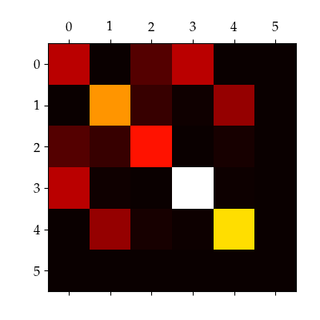
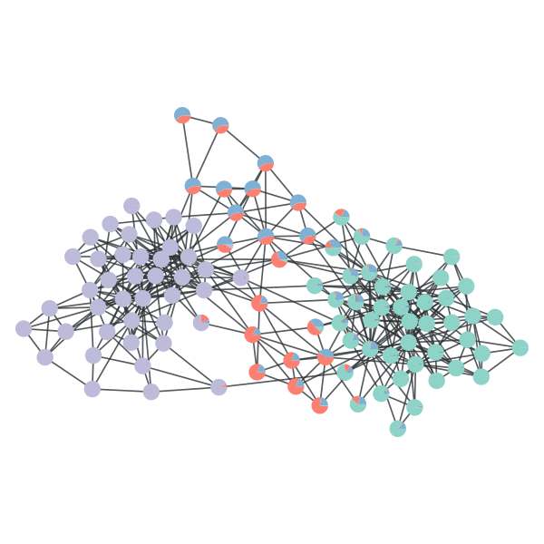
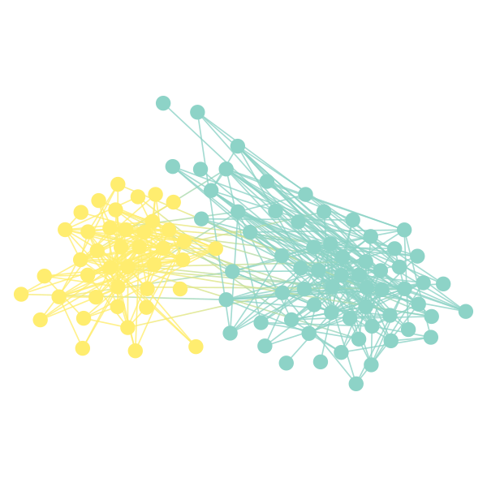
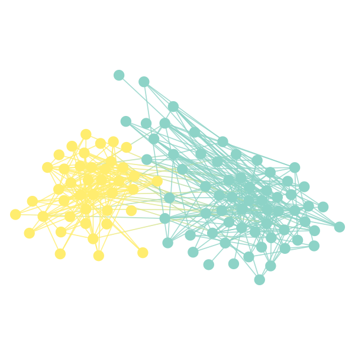
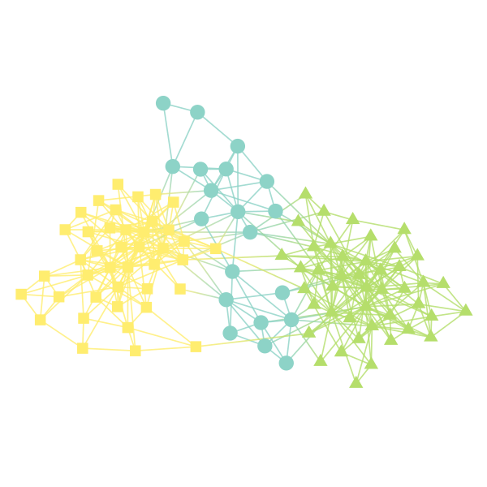
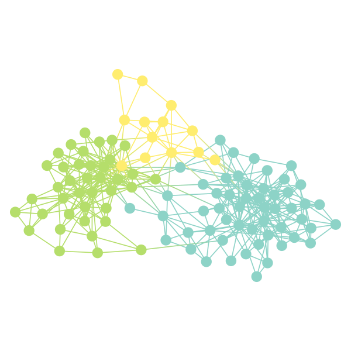
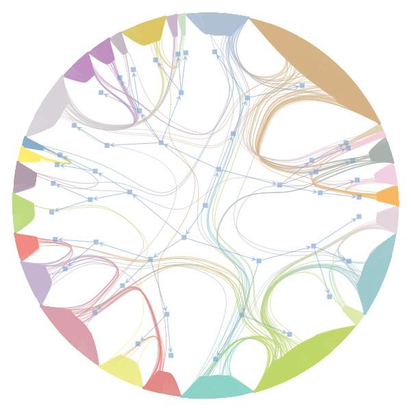
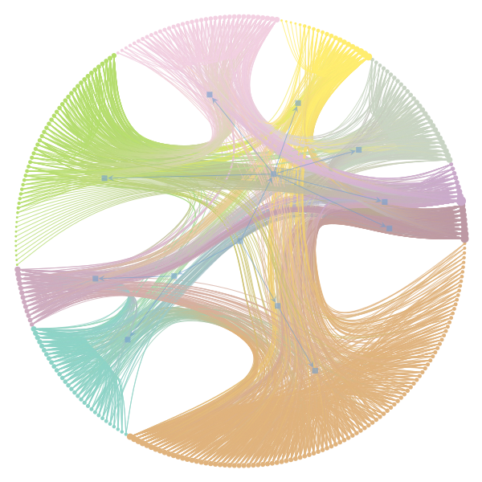
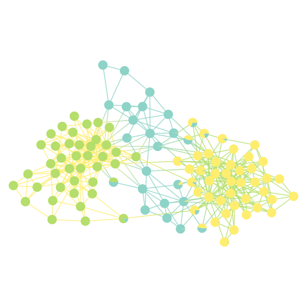

graph_tool.inference - Statistical inference of generative network models¶
This module contains algorithms for the identification of large-scale network structure via the statistical inference of generative models.
Note
An introduction to the concepts used here, as well as a basic HOWTO is included in the cookbook section: Inferring modular network structure.
Nonparametric stochastic block model inference¶
High-level functions¶
minimize_blockmodel_dl |
Fit the stochastic block model, by minimizing its description length using an agglomerative heuristic. |
minimize_nested_blockmodel_dl |
Fit the nested stochastic block model, by minimizing its description length using an agglomerative heuristic. |
State classes¶
BlockState |
The stochastic block model state of a given graph. |
OverlapBlockState |
The overlapping stochastic block model state of a given graph. |
LayeredBlockState |
The (possibly overlapping) block state of a given graph, where the edges are divided into discrete layers. |
NestedBlockState |
The nested stochastic block model state of a given graph. |
TemperingState |
This class aggregates several state classes and corresponding inverse-temperature values to implement parallel tempering MCMC. |
Sampling and minimization¶
mcmc_equilibrate |
Equilibrate a MCMC with a given starting state. |
mcmc_anneal |
Equilibrate a MCMC at a specified target temperature by performing simulated annealing. |
mcmc_multilevel |
Equilibrate a MCMC from a starting state with a higher order, by performing successive agglomerative initializations and equilibrations until the desired order is reached, such that metastable states are avoided. |
multicanonical_equilibrate |
Equilibrate a multicanonical Monte Carlo sampling using the Wang-Landau algorithm. |
MulticanonicalState |
The density of states of a multicanonical Monte Carlo algorithm. |
bisection_minimize |
Find the best order (number of groups) given an initial set of states by performing a one-dimension minimization, using a Fibonacci (or golden section) search. |
hierarchy_minimize |
Attempt to find a fit of the nested stochastic block model that minimizes the description length. |
Auxiliary functions¶
model_entropy |
Computes the amount of information necessary for the parameters of the traditional blockmodel ensemble, for B blocks, N vertices, E edges, and either a directed or undirected graph. |
mf_entropy |
Compute the “mean field” entropy given the vertex block membership marginals. |
bethe_entropy |
Compute the Bethe entropy given the edge block membership marginals. |
microstate_entropy |
Compute microstate entropy given a histogram of partitions. |
half_edge_graph |
Generate a half-edge graph, where each half-edge is represented by a node, and an edge connects the half-edges like in the original graph. |
get_block_edge_gradient |
Get edge gradients corresponding to the block membership at the endpoints of the edges given by the be edge property map. |
Auxiliary classes¶
PartitionHist |
Histogram of partitions, implemented in C++. |
BlockPairHist |
Histogram of block pairs, implemented in C++. |
Nonparametric network reconstruction¶
State classes¶
MeasuredBlockState |
The inference state of a measured graph, using the stochastic block model as a prior. |
MixedMeasuredBlockState |
The inference state of a measured graph with heterogeneous errors, using the stochastic block model as a prior. |
UncertainBlockState |
The inference state of an uncertain graph, using the stochastic block model as a prior. |
UncertainBaseState |
Base state for uncertain network inference. |
Semiparametric stochastic block model inference¶
State classes¶
EMBlockState |
The parametric, undirected stochastic block model state of a given graph. |
Large-scale descriptors¶
modularity |
Calculate Newman’s modularity of a network partition. |
Contents¶
-
class
graph_tool.inference.blockmodel.PartitionHist¶ Histogram of partitions, implemented in C++. Interface supports querying and setting using Vector_int32_t as keys, and ints as values.
-
asdict()¶ Return the histogram’s contents as a dict.
-
-
class
graph_tool.inference.blockmodel.BlockPairHist¶ Histogram of block pairs, implemented in C++. Interface supports querying and setting using pairs of ints as keys, and ints as values.
-
asdict()¶ Return the histogram’s contents as a dict.
-
-
class
graph_tool.inference.blockmodel.BlockState(g, b=None, B=None, eweight=None, vweight=None, recs=[], rec_types=[], rec_params=[], clabel=None, pclabel=None, bfield=None, deg_corr=True, allow_empty=False, max_BE=1000, **kwargs)[source]¶ Bases:
objectThe stochastic block model state of a given graph.
Parameters: g :
GraphGraph to be modelled.
b :
PropertyMap(optional, default:None)Initial block labels on the vertices. If not supplied, it will be randomly sampled.
B :
int(optional, default:None)Number of blocks (or vertex groups). If not supplied it will be obtained from the parameter
b.eweight :
PropertyMap(optional, default:None)Edge multiplicities (for multigraphs or block graphs).
vweight :
PropertyMap(optional, default:None)Vertex multiplicities (for block graphs).
recs : list of
PropertyMapinstances (optional, default:[])List of real or discrete-valued edge covariates.
rec_types : list of edge covariate types (optional, default:
[])List of types of edge covariates. The possible types are:
"real-exponential","real-normal","discrete-geometric","discrete-poisson"or"discrete-binomial".rec_params : list of
dict(optional, default:[])Model hyperparameters for edge covariates. This should be a list of
dictinstances, or the string “microcanonical” (the default if nothing is specified). The keys depend on the type of edge covariate:"real-exponential"or"discrete-poisson"The parameter list is
["r", "theta"], corresponding to the parameters of the Gamma prior distribution. If unspecified, the default is the “empirical Bayes” choice:r = 1.0andthetais the global average of the edge covariate."discrete-geometric"The parameter list is
["alpha", "beta"], corresponding to the parameters of the Beta prior distribution. If unspecified, the default is the noninformative choice:alpha = beta = 1.0"discrete-binomial"The parameter list is
["N", "alpha", "beta"], corresponding to the number of trialsNand the parameters of the Beta prior distribution. If unspecified, the default is the noninformative choice,alpha = beta = 1.0, andNis taken to be the maximum edge covarite value."real-normal"The parameter list is
["m0", "k0", "v0", "nu0"]corresponding to the normal-inverse-chi-squared prior. If unspecified, the defaults are:m0 = rec.fa.mean(),k0 = 1,v0 = rec.fa.std() ** 2, andnu0 = 3, whererecis the corresponding edge covariate property map.
clabel :
PropertyMap(optional, default:None)Constraint labels on the vertices. If supplied, vertices with different label values will not be clustered in the same group.
pclabel :
PropertyMap(optional, default:None)Partition constraint labels on the vertices. This has the same interpretation as
clabel, but will be used to compute the partition description length.bfield :
PropertyMap(optional, default:None)Local field acting as a prior for the node partition. This should be a vector property map of type
vector<double>, and contain the log-probability for each node to be placed in each group.deg_corr :
bool(optional, default:True)If
True, the degree-corrected version of the blockmodel ensemble will be assumed, otherwise the traditional variant will be used.allow_empty :
bool(optional, default:False)If
True, partition description length computed will allow for empty groups.max_BE :
int(optional, default:1000)If the number of blocks exceeds this value, a sparse matrix is used for the block graph. Otherwise a dense matrix will be used.
-
copy(g=None, eweight=None, vweight=None, b=None, B=None, deg_corr=None, clabel=None, overlap=False, pclabel=None, bfield=None, max_BE=None, **kwargs)[source]¶ Copies the block state. The parameters override the state properties, and have the same meaning as in the constructor.
-
get_block_state(b=None, vweight=False, **kwargs)[source]¶ Returns a
BlockStatecorresponding to the block graph (i.e. the blocks of the current state become the nodes). The parameters have the same meaning as the in the constructor. Ifvweight == Truethe nodes of the block state are weighted with the node counts.
-
get_bclabel(clabel=None)[source]¶ Returns a
PropertyMapcorresponding to constraint labels for the block graph.
-
get_bpclabel()[source]¶ Returns a
PropertyMapcorresponding to partition constraint labels for the block graph.
-
get_ers()[source]¶ Returns the edge property map of the block graph which contains the \(e_{rs}\) matrix entries. For undirected graphs, the diagonal values (self-loops) contain \(e_{rr}/2\).
-
get_er()[source]¶ Returns the vertex property map of the block graph which contains the number \(e_r\) of half-edges incident on block \(r\). If the graph is directed, a pair of property maps is returned, with the number of out-edges \(e^+_r\) and in-edges \(e^-_r\), respectively.
-
get_nr()[source]¶ Returns the vertex property map of the block graph which contains the block sizes \(n_r\).
-
entropy(adjacency=True, dl=True, partition_dl=True, degree_dl=True, degree_dl_kind='distributed', edges_dl=True, dense=False, multigraph=True, deg_entropy=True, recs=True, recs_dl=True, beta_dl=1.0, exact=True, **kwargs)[source]¶ Calculate the entropy (a.k.a. negative log-likelihood) associated with the current block partition.
Parameters: adjacency :
bool(optional, default:True)If
True, the adjacency term of the description length will be included.dl :
bool(optional, default:True)If
True, the description length for the parameters will be included.partition_dl :
bool(optional, default:True)If
True, anddl == Truethe partition description length will be included.degree_dl :
bool(optional, default:True)If
True, anddl == Truethe degree sequence description length will be included (for degree-corrected models).degree_dl_kind :
str(optional, default:"distributed")This specifies the prior used for the degree sequence. It must be one of:
"uniform","distributed"(default) or"entropy".edges_dl :
bool(optional, default:True)If
True, anddl == Truethe edge matrix description length will be included.dense :
bool(optional, default:False)If
True, the “dense” variant of the entropy will be computed.multigraph :
bool(optional, default:True)If
True, the multigraph entropy will be used.deg_entropy :
bool(optional, default:True)If
True, the degree entropy term that is independent of the network partition will be included (for degree-corrected models).recs :
bool(optional, default:True)If
True, the likelihood for real or discrete-valued edge covariates is computed.recs_dl :
bool(optional, default:True)If
True, anddl == Truethe edge covariate description length will be included.beta_dl :
double(optional, default:1.)Prior inverse temperature.
exact :
bool(optional, default:True)If
True, the exact expressions will be used. Otherwise, Stirling’s factorial approximation will be used for some terms.Notes
The “entropy” of the state is the negative log-likelihood of the microcanonical SBM, that includes the generated graph \(\boldsymbol{A}\) and the model parameters \(\boldsymbol{\theta}\),
\[\begin{split}\Sigma &= - \ln P(\boldsymbol{A},\boldsymbol{\theta}) \\ &= - \ln P(\boldsymbol{A}|\boldsymbol{\theta}) - \ln P(\boldsymbol{\theta}).\end{split}\]This value is also called the description length of the data, and it corresponds to the amount of information required to describe it (in nats).
For the traditional blockmodel (
deg_corr == False), the model parameters are \(\boldsymbol{\theta} = \{\boldsymbol{e}, \boldsymbol{b}\}\), where \(\boldsymbol{e}\) is the matrix of edge counts between blocks, and \(\boldsymbol{b}\) is the partition of the nodes into blocks. For the degree-corrected blockmodel (deg_corr == True), we have an additional set of parameters, namely the degree sequence \(\boldsymbol{k}\).For the traditional blockmodel, the model likelihood is
\[\begin{split}P(\boldsymbol{A}|\boldsymbol{e},\boldsymbol{b}) &= \frac{\prod_{r<s}e_{rs}!\prod_re_{rr}!!}{\prod_rn_r^{e_r}}\times \frac{1}{\prod_{i<j}A_{ij}!\prod_iA_{ii}!!},\\ P(\boldsymbol{A}|\boldsymbol{e},\boldsymbol{b}) &= \frac{\prod_{rs}e_{rs}!}{\prod_rn_r^{e_r}}\times \frac{1}{\prod_{ij}A_{ij}!},\end{split}\]for undirected and directed graphs, respectively, where \(e_{rs}\) is the number of edges from block \(r\) to \(s\) (or the number of half-edges for the undirected case when \(r=s\)), and \(n_r\) is the number of vertices in block \(r\) .
For the degree-corrected variant the equivalent expressions are
\[\begin{split}P(\boldsymbol{A}|\boldsymbol{e},\boldsymbol{b},\boldsymbol{k}) &= \frac{\prod_{r<s}e_{rs}!\prod_re_{rr}!!}{\prod_re_r!}\times \frac{\prod_ik_i!}{\prod_{i<j}A_{ij}!\prod_iA_{ii}!!},\\ P(\boldsymbol{A}|\boldsymbol{e},\boldsymbol{b},\boldsymbol{k}) &= \frac{\prod_{rs}e_{rs}!}{\prod_re_r^+!\prod_re_r^-!}\times \frac{\prod_ik_i^+!\prod_ik_i^-!}{\prod_{ij}A_{ij}!},\end{split}\]where \(e_r = \sum_se_{rs}\) is the number of half-edges incident on block \(r\), and \(e^+_r = \sum_se_{rs}\) and \(e^-_r = \sum_se_{sr}\) are the numbers of out- and in-edges adjacent to block \(r\), respectively.
If
exact == False, Stirling’s approximation is used in the above expression.If
dense == True, the likelihood for the non-degree-corrected model becomes instead\[\begin{split}P(\boldsymbol{A}|\boldsymbol{e},\boldsymbol{b})^{-1} &= \prod_{r<s}{n_rn_s\choose e_{rs}}\prod_r{{n_r\choose 2}\choose e_{rr}/2},\\ P(\boldsymbol{A}|\boldsymbol{e},\boldsymbol{b})^{-1} &= \prod_{rs}{n_rn_s\choose e_{rs}}\end{split}\]if
multigraph == False, otherwise we replace \({n\choose m}\to\left(\!\!{n\choose m}\!\!\right)\) above, where \(\left(\!\!{n\choose m}\!\!\right) = {n+m-1\choose m}\). A “dense” entropy for the degree-corrected model is not available, and if requested will raise aNotImplementedError.If
dl == True, the description length \(\mathcal{L} = -\ln P(\boldsymbol{\theta})\) of the model will be returned as well. The terms \(P(\boldsymbol{e})\) and \(P(\boldsymbol{b})\) are described in described inmodel_entropy().For the degree-corrected model we need to specify the prior \(P(\boldsymbol{k})\) for the degree sequence as well. Here there are three options:
degree_dl_kind == "uniform"\[P(\boldsymbol{k}|\boldsymbol{e},\boldsymbol{b}) = \prod_r\left(\!\!{n_r\choose e_r}\!\!\right)^{-1}.\]This corresponds to a noninformative prior, where the degrees are sampled from a uniform distribution.
degree_dl_kind == "distributed"(default)\[P(\boldsymbol{k}|\boldsymbol{e},\boldsymbol{b}) = \prod_r\frac{\prod_k\eta_k^r!}{n_r!} \prod_r q(e_r, n_r)^{-1}\]with \(\eta_k^r\) being the number of nodes with degree \(k\) in group \(r\), and \(q(n,m)\) being the number of partitions of integer \(n\) into at most \(m\) parts.
This corresponds to a prior for the degree sequence conditioned on the degree frequencies, which are themselves sampled from a uniform hyperprior. This option should be preferred in most cases.
degree_dl_kind == "entropy"\[P(\boldsymbol{k}|\boldsymbol{e},\boldsymbol{b}) \approx \prod_r\exp\left(-n_rH(\boldsymbol{k}_r)\right)\]where \(H(\boldsymbol{k}_r) = -\sum_kp_r(k)\ln p_r(k)\) is the entropy of the degree distribution inside block \(r\).
Note that, differently from the other two choices, this represents only an approximation of the description length. It is meant to be used only for comparison purposes, and should be avoided in practice.
For the directed case, the above expressions are duplicated for the in- and out-degrees.
References
[peixoto-nonparametric-2017175] Tiago P. Peixoto, “Nonparametric Bayesian inference of the microcanonical stochastic block model”, Phys. Rev. E 95 012317 (2017), DOI: 10.1103/PhysRevE.95.012317 [sci-hub, @tor], arXiv: 1610.02703 [peixoto-hierarchical-2014175] Tiago P. Peixoto, “Hierarchical block structures and high-resolution model selection in large networks “, Phys. Rev. X 4, 011047 (2014), DOI: 10.1103/PhysRevX.4.011047 [sci-hub, @tor], arXiv: 1310.4377. [peixoto-weighted-2017175] Tiago P. Peixoto, “Nonparametric weighted stochastic block models”, arXiv: 1708.01432
-
get_matrix()[source]¶ Returns the block matrix (as a sparse
csr_matrix), which contains the number of edges between each block pair.Warning
This corresponds to the adjacency matrix of the block graph, which by convention includes twice the amount of edges in the diagonal entries if the graph is undirected.
Examples
>>> g = gt.collection.data["polbooks"] >>> state = gt.BlockState(g, B=5, deg_corr=True) >>> state.mcmc_sweep(niter=1000) (...) >>> m = state.get_matrix() >>> figure() <...> >>> matshow(m.todense()) <...> >>> savefig("bloc_mat.pdf")
A 5x5 block matrix.
-
virtual_vertex_move(v, s, **kwargs)[source]¶ Computes the entropy difference if vertex
vis moved to blocks. The remaining parameters are the same as ingraph_tool.inference.blockmodel.BlockState.entropy().
-
move_vertex(v, s)[source]¶ Move vertex
vto blocks.This optionally accepts a list of vertices and blocks to move simultaneously.
-
remove_vertex(v)[source]¶ Remove vertex
vfrom its current group.This optionally accepts a list of vertices to remove.
Warning
This will leave the state in an inconsistent state before the vertex is returned to some other group, or if the same vertex is removed twice.
-
add_vertex(v, r)[source]¶ Add vertex
vto blockr.This optionally accepts a list of vertices and blocks to add.
Warning
This can leave the state in an inconsistent state if a vertex is added twice to the same group.
-
sample_vertex_move(v, c=1.0, d=0.1)[source]¶ Sample block membership proposal of vertex
vaccording to real-valued sampling parameterscandd: For \(c\to 0\) the blocks are sampled according to the local neighborhood and their connections; for \(c\to\infty\) the blocks are sampled randomly. With a probabilityd, a new (empty) group is sampled.
-
get_move_prob(v, s, c=1.0, d=0.1, reverse=False)[source]¶ Compute the probability of a move proposal for vertex
vto blocksaccording to sampling parameterscandd, as obtained withgraph_tool.inference.blockmodel.BlockState.sample_vertex_move(). Ifreverse == True, the reverse probability of moving the node back from blocksto its current one is obtained.
-
get_edges_prob(missing, spurious=[], entropy_args={})[source]¶ Compute the joint log-probability of the missing and spurious edges given by
missingandspurious(a list of(source, target)tuples, orEdge()instances), together with the observed edges.More precisely, the log-likelihood returned is
\[\ln \frac{P(\boldsymbol G + \delta \boldsymbol G | \boldsymbol b)}{P(\boldsymbol G| \boldsymbol b)}\]where \(\boldsymbol G + \delta \boldsymbol G\) is the modified graph (with missing edges added and spurious edges deleted).
The values in
entropy_argsare passed toentropy()to calculate the log-probability.
-
mcmc_sweep(beta=1.0, c=1.0, d=0.01, niter=1, entropy_args={}, allow_vacate=True, sequential=True, deterministic=False, parallel=False, vertices=None, verbose=False, **kwargs)[source]¶ Perform
nitersweeps of a Metropolis-Hastings acceptance-rejection sampling MCMC to sample network partitions.Parameters: beta :
float(optional, default:1.)Inverse temperature.
c :
float(optional, default:1.)Sampling parameter
cfor move proposals: For \(c\to 0\) the blocks are sampled according to the local neighborhood of a given node and their block connections; for \(c\to\infty\) the blocks are sampled randomly. Note that only for \(c > 0\) the MCMC is guaranteed to be ergodic.d :
float(optional, default:.01)Probability of selecting a new (i.e. empty) group for a given move.
niter :
int(optional, default:1)Number of sweeps to perform. During each sweep, a move attempt is made for each node.
entropy_args :
dict(optional, default:{})Entropy arguments, with the same meaning and defaults as in
graph_tool.inference.blockmodel.BlockState.entropy().allow_vacate :
bool(optional, default:True)Allow groups to be vacated.
sequential :
bool(optional, default:True)If
sequential == Trueeach vertex move attempt is made sequentially, where vertices are visited in random order. Otherwise the moves are attempted by sampling vertices randomly, so that the same vertex can be moved more than once, before other vertices had the chance to move.deterministic :
bool(optional, default:False)If
sequential == Trueanddeterministic == Truethe vertices will be visited in deterministic order.parallel :
bool(optional, default:False)If
parallel == True, vertex movements are attempted in parallel.Warning
If
parallel == True, the asymptotic exactness of the MCMC sampling is not guaranteed.vertices :
listof ints (optional, default:None)If provided, this should be a list of vertices which will be moved. Otherwise, all vertices will.
verbose :
bool(optional, default:False)If
verbose == True, detailed information will be displayed.Returns: dS :
floatEntropy difference after the sweeps.
nattempts :
intNumber of vertex moves attempted.
nmoves :
intNumber of vertices moved.
Notes
This algorithm has an \(O(E)\) complexity, where \(E\) is the number of edges (independent of the number of blocks).
References
[peixoto-efficient-2014178] Tiago P. Peixoto, “Efficient Monte Carlo and greedy heuristic for the inference of stochastic block models”, Phys. Rev. E 89, 012804 (2014), DOI: 10.1103/PhysRevE.89.012804 [sci-hub, @tor], arXiv: 1310.4378
-
multiflip_mcmc_sweep(a1=0.99, an=0.9, beta=1.0, c=1.0, d=0.01, niter=1, entropy_args={}, allow_vacate=True, sequential=True, verbose=False, **kwargs)[source]¶ Perform
nitersweeps of a Metropolis-Hastings acceptance-rejection sampling MCMC with multiple simultaneous moves to sample network partitions.Parameters: a1 :
float(optional, default:.9)Probability of single moves.
an :
float(optional, default:.9)Relative probability of group merges. The complementary probability will correspond to multiple moves within a group.
beta :
float(optional, default:1.)Inverse temperature.
c :
float(optional, default:1.)Sampling parameter
cfor move proposals: For \(c\to 0\) the blocks are sampled according to the local neighborhood of a given node and their block connections; for \(c\to\infty\) the blocks are sampled randomly. Note that only for \(c > 0\) the MCMC is guaranteed to be ergodic.d :
float(optional, default:.01)Probability of selecting a new (i.e. empty) group for a given move.
niter :
int(optional, default:1)Number of sweeps to perform. During each sweep, a move attempt is made for each node.
entropy_args :
dict(optional, default:{})Entropy arguments, with the same meaning and defaults as in
graph_tool.inference.blockmodel.BlockState.entropy().allow_vacate :
bool(optional, default:True)Allow groups to be vacated.
verbose :
bool(optional, default:False)If
verbose == True, detailed information will be displayed.Returns: dS :
floatEntropy difference after the sweeps.
nattempts :
intNumber of vertex moves attempted.
nmoves :
intNumber of vertices moved.
Notes
This algorithm has an \(O(E)\) complexity, where \(E\) is the number of edges (independent of the number of blocks).
-
gibbs_sweep(beta=1.0, niter=1, entropy_args={}, allow_vacate=True, allow_new_group=True, sequential=True, deterministic=False, parallel=False, vertices=None, verbose=False, **kwargs)[source]¶ Perform
nitersweeps of a rejection-free Gibbs sampling MCMC to sample network partitions.Parameters: beta :
float(optional, default:1.)Inverse temperature.
niter :
int(optional, default:1)Number of sweeps to perform. During each sweep, a move attempt is made for each node.
entropy_args :
dict(optional, default:{})Entropy arguments, with the same meaning and defaults as in
graph_tool.inference.blockmodel.BlockState.entropy().allow_vacate :
bool(optional, default:True)Allow groups to be vacated.
allow_new_group :
bool(optional, default:True)Allow the number of groups to increase.
sequential :
bool(optional, default:True)If
sequential == Trueeach vertex move attempt is made sequentially, where vertices are visited in random order. Otherwise the moves are attempted by sampling vertices randomly, so that the same vertex can be moved more than once, before other vertices had the chance to move.deterministic :
bool(optional, default:False)If
sequential == Trueanddeterministic == Truethe vertices will be visited in deterministic order.parallel :
bool(optional, default:False)If
parallel == True, vertex movements are attempted in parallel.Warning
If
parallel == True, the asymptotic exactness of the MCMC sampling is not guaranteed.vertices :
listof ints (optional, default:None)If provided, this should be a list of vertices which will be moved. Otherwise, all vertices will.
verbose :
bool(optional, default:False)If
verbose == True, detailed information will be displayed.Returns: dS :
floatEntropy difference after the sweeps.
nattempts :
intNumber of vertex moves attempted.
nmoves :
intNumber of vertices moved.
Notes
This algorithm has an \(O(E\times B)\) complexity, where \(B\) is the number of blocks, and \(E\) is the number of edges.
-
multicanonical_sweep(m_state, multiflip=False, **kwargs)[source]¶ Perform
nitersweeps of a non-Markovian multicanonical sampling using the Wang-Landau algorithm.Parameters: m_state :
MulticanonicalStateMulticanonicalStateinstance containing the current state of the Wang-Landau run.multiflip :
bool(optional, default:False)If
True,multiflip_mcmc_sweep()will be used, otherwisemcmc_sweep().**kwargs : Keyword parameter list
The remaining parameters will be passed to
multiflip_mcmc_sweep()ormcmc_sweep().Returns: dS :
floatEntropy difference after the sweeps.
nattempts :
intNumber of vertex moves attempted.
nmoves :
intNumber of vertices moved.
Notes
This algorithm has an \(O(E)\) complexity, where \(E\) is the number of edges (independent of the number of blocks).
References
[wang-efficient-2001179] Fugao Wang, D. P. Landau, “An efficient, multiple range random walk algorithm to calculate the density of states”, Phys. Rev. Lett. 86, 2050 (2001), DOI: 10.1103/PhysRevLett.86.2050 [sci-hub, @tor], arXiv: cond-mat/0011174
-
exhaustive_sweep(entropy_args={}, callback=None, density=None, vertices=None, initial_partition=None, max_iter=None)[source]¶ Perform an exhaustive loop over all possible network partitions.
Parameters: entropy_args :
dict(optional, default:{})Entropy arguments, with the same meaning and defaults as in
graph_tool.inference.blockmodel.BlockState.entropy().callback : callable object (optional, default:
None)Function to be called for each partition, with three arguments
(S, S_min, b_min)corresponding to the the current entropy value, the minimum entropy value so far, and the corresponding partition, respectively. If not provided, andhist is Nonean iterator over the same values will be returned instead.density :
tuple(optional, default:None)If provided, it should contain a tuple with values
(S_min, S_max, n_bins), which will be used to obtain the density of states via a histogram of sizen_bins. This parameter is ignored unlesscallback is None.vertices : iterable of ints (optional, default:
None)If provided, this should be a list of vertices which will be moved. Otherwise, all vertices will.
initial_partition : iterable of ints (optional, default:
None)If provided, this will provide the initial partition for the iteration.
max_iter :
int(optional, default:None)If provided, this will limit the total number of iterations.
Returns: states : iterator over (S, S_min, b_min)
If
callbackisNoneandhistisNone, the function will return an iterator over(S, S_min, b_min)corresponding to the the current entropy value, the minimum entropy value so far, and the corresponding partition, respectively.Ss, counts : pair of
numpy.ndarrayIf
callback is Noneandhist is not None, the function will return the values of each bin (Ss) and the state count of each bin (counts).b_min :
PropertyMapIf
callback is not Noneorhist is not None, the function will also return partition with smallest entropy.Notes
This algorithm has an \(O(B^N)\) complexity, where \(B\) is the number of blocks, and \(N\) is the number of vertices.
-
merge_sweep(nmerges=1, niter=10, entropy_args={}, parallel=True, verbose=False, **kwargs)[source]¶ Perform
nitermerge sweeps, where block nodes are progressively merged together in a manner that least increases the entropy.Parameters: nmerges :
int(optional, default:1)Number block nodes to merge.
niter :
int(optional, default:1)Number of merge attempts to perform for each block node, before the best one is selected.
entropy_args :
dict(optional, default:{})Entropy arguments, with the same meaning and defaults as in
graph_tool.inference.blockmodel.BlockState.entropy().parallel :
bool(optional, default:True)If
parallel == True, the merge candidates are obtained in parallel.verbose :
bool(optional, default:False)If
verbose == True, detailed information will be displayed.Returns: dS :
floatEntropy difference after the sweeps.
nattempts :
intNumber of attempted merges.
nmoves :
intNumber of vertices merged.
Notes
This function should only be called for block states, obtained from
graph_tool.inference.blockmodel.BlockState.get_block_state().References
[peixoto-efficient-2014180] Tiago P. Peixoto, “Efficient Monte Carlo and greedy heuristic for the inference of stochastic block models”, Phys. Rev. E 89, 012804 (2014), DOI: 10.1103/PhysRevE.89.012804 [sci-hub, @tor], arXiv: 1310.4378
-
shrink(B, **kwargs)[source]¶ Reduces the order of current state by progressively merging groups, until only
Bare left. All remaining keyword arguments are passed tograph_tool.inference.blockmodel.BlockState.merge_sweep().This function leaves the current state untouched and returns instead a copy with the new partition.
-
collect_edge_marginals(p=None, update=1)[source]¶ Collect the edge marginal histogram, which counts the number of times the endpoints of each node have been assigned to a given block pair.
This should be called multiple times, e.g. after repeated runs of the
graph_tool.inference.blockmodel.BlockState.mcmc_sweep()function.Parameters: p :
PropertyMap(optional, default:None)Edge property map with edge marginals to be updated. If not provided, an empty histogram will be created.
update : float (optional, default:
1)Each call increases the current count by the amount given by this parameter.
Returns: p :
PropertyMapEdge property map with updated edge marginals.
Examples
>>> g = gt.collection.data["polbooks"] >>> state = gt.BlockState(g, B=4, deg_corr=True) >>> pe = None >>> state.mcmc_sweep(niter=1000) # remove part of the transient (...) >>> for i in range(1000): ... ret = state.mcmc_sweep(niter=10) ... pe = state.collect_edge_marginals(pe) >>> gt.bethe_entropy(g, pe)[0] -0.901611...
-
collect_vertex_marginals(p=None, unlabel=False, update=1)[source]¶ Collect the vertex marginal histogram, which counts the number of times a node was assigned to a given block.
This should be called multiple times, e.g. after repeated runs of the
graph_tool.inference.blockmodel.BlockState.mcmc_sweep()function.Parameters: p :
PropertyMap(optional, default:None)Vertex property map with vector-type values, storing the previous block membership counts. If not provided, an empty histogram will be created.
unlabel : bool (optional, default:
False)If
True, a canonical labelling of the groups will be used, so that each partition is uniquely represented.update : int (optional, default:
1)Each call increases the current count by the amount given by this parameter.
Returns: p :
PropertyMapVertex property map with vector-type values, storing the accumulated block membership counts.
Examples
>>> g = gt.collection.data["polbooks"] >>> state = gt.BlockState(g, B=4, deg_corr=True) >>> pv = None >>> state.mcmc_sweep(niter=1000) # remove part of the transient (...) >>> for i in range(1000): ... ret = state.mcmc_sweep(niter=10) ... pv = state.collect_vertex_marginals(pv) >>> gt.mf_entropy(g, pv) 26.887021... >>> gt.graph_draw(g, pos=g.vp["pos"], vertex_shape="pie", ... vertex_pie_fractions=pv, output="polbooks_blocks_soft_B4.pdf") <...>
“Soft” block partition of a political books network with \(B=4\).
-
collect_partition_histogram(h=None, update=1, unlabel=True)[source]¶ Collect a histogram of partitions.
This should be called multiple times, e.g. after repeated runs of the
graph_tool.inference.blockmodel.BlockState.mcmc_sweep()function.Parameters: h :
PartitionHist(optional, default:None)Partition histogram. If not provided, an empty histogram will be created.
update : float (optional, default:
1)Each call increases the current count by the amount given by this parameter.
unlabel : bool (optional, default:
True)If
True, a canonical labelling of the groups will be used, so that each partition is uniquely represented.Returns: h :
PartitionHist(optional, default:None)Updated Partition histogram.
Examples
>>> g = gt.collection.data["polbooks"] >>> state = gt.BlockState(g, B=4, deg_corr=True) >>> ph = None >>> state.mcmc_sweep(niter=1000) # remove part of the transient (...) >>> for i in range(1000): ... ret = state.mcmc_sweep(niter=10) ... ph = state.collect_partition_histogram(ph) >>> gt.microstate_entropy(ph) 129.330077...
-
draw(**kwargs)[source]¶ Convenience wrapper to
graph_draw()that draws the state of the graph as colors on the vertices and edges.
-
sample_graph(canonical=False, multigraph=True, self_loops=True)[source]¶ Sample a new graph from the fitted model.
Parameters: canonical :
bool(optional, default:False)If
canonical == True, the graph will be sampled from the maximum-likelihood estimate of the canonical stochastic block model. Otherwise, it will be sampled from the microcanonical model.multigraph :
bool(optional, default:True)If
True, parallel edges will be allowed.self-loops :
bool(optional, default:True)If
True, self-loops will be allowed.Returns: g :
GraphGenerated graph.
Notes
This function is just a convenience wrapper to
generate_sbm().Examples
>>> g = gt.collection.data["polbooks"] >>> state = gt.minimize_blockmodel_dl(g, B_max=3) >>> u = state.sample_graph(canonical=True, self_loops=False, multigraph=False) >>> ustate = gt.BlockState(u, b=state.b) >>> state.draw(pos=g.vp.pos, output="polbooks-sbm.png") <...> >>> ustate.draw(pos=u.own_property(g.vp.pos), output="polbooks-sbm-sampled.png") <...>
 

Left: Political books network. Right: Sample from the degree-corrected SBM fitted to the original network.
{kind=link}
-
graph_tool.inference.blockmodel.model_entropy(B, N, E, directed=False, nr=None, allow_empty=True)[source]¶ Computes the amount of information necessary for the parameters of the traditional blockmodel ensemble, for
Bblocks,Nvertices,Eedges, and either a directed or undirected graph.This is equivalently defined as minus the log-likelihood of sampling the parameters from a nonparametric generative model.
A traditional blockmodel is defined as a set of \(N\) vertices which can belong to one of \(B\) blocks, and the matrix \(e_{rs}\) describes the number of edges from block \(r\) to \(s\) (or twice that number if \(r=s\) and the graph is undirected).
For an undirected graph, the number of distinct \(e_{rs}\) matrices is given by,
\[\Omega_m = \left(\!\!{B(B+1)/2 \choose E}\!\!\right)\]and for a directed graph,
\[\Omega_m = \left(\!\!{B^2 \choose E}\!\!\right)\]where \(\left(\!{n \choose k}\!\right) = {n+k-1\choose k}\) is the number of \(k\) combinations with repetitions from a set of size \(n\). Hence, we have the description length of the edge counts
\[-\ln P(\boldsymbol{e}) = \ln \Omega_m.\]For the node partition \(\boldsymbol{b}\) we assume a two-level Bayesian hierarchy, where first the group size histogram is generated, and conditioned on it the partition, which leads to a description length:
\[-\ln P(\boldsymbol{b}) = \ln\left(\!\!{B \choose N}\!\!\right) + \ln N! - \sum_r \ln n_r!,\]where \(n_r\) is the number of nodes in block \(r\). If we forbid empty groups, with
allow_empty == False, this changes slightly to\[-\ln P(\boldsymbol{b}) = \ln {N - 1 \choose B - 1} + \ln N! - \sum_r \ln n_r!.\]The total information necessary to describe the model is then,
\[-\ln P(\boldsymbol{e}, \boldsymbol{b}) = -\ln P(\boldsymbol{e}) - \ln P(\boldsymbol{b}).\]If
nrisNone, it is assumed \(n_r=N/B\). IfnrisFalse, the partition term \(-\ln P(\boldsymbol{b})\) is omitted entirely.References
[peixoto-parsimonious-2013181] Tiago P. Peixoto, “Parsimonious module inference in large networks”, Phys. Rev. Lett. 110, 148701 (2013), DOI: 10.1103/PhysRevLett.110.148701 [sci-hub, @tor], arXiv: 1212.4794. [peixoto-nonparametric-2017181] Tiago P. Peixoto, “Nonparametric Bayesian inference of the microcanonical stochastic block model”, Phys. Rev. E 95 012317 (2017), DOI: 10.1103/PhysRevE.95.012317 [sci-hub, @tor], arXiv: 1610.02703
-
graph_tool.inference.blockmodel.bethe_entropy(g, p)[source]¶ Compute the Bethe entropy given the edge block membership marginals.
Parameters: g :
GraphThe graph.
p :
PropertyMapEdge property map with edge marginals.
Returns: H :
floatThe Bethe entropy value (in nats)
Hmf :
floatThe “mean field” entropy value (in nats), as would be returned by the
mf_entropy()function.pv :
PropertyMap(optional, default:None)Vertex property map with vector-type values, storing the accumulated block membership counts. These are the node marginals, as would be returned by the
collect_vertex_marginals()method.Notes
The Bethe entropy is defined as,
\[H = -\sum_{ij}A_{ij}\sum_{rs}\pi_{ij}(r,s)\ln\pi_{ij}(r,s) - \sum_i(1-k_i)\sum_r\pi_i(r)\ln\pi_i(r),\]where \(\pi_{ij}(r,s)\) is the marginal probability that vertices \(i\) and \(j\) belong to blocks \(r\) and \(s\), respectively, and \(\pi_i(r)\) is the marginal probability that vertex \(i\) belongs to block \(r\), and \(k_i\) is the degree of vertex \(i\) (or total degree for directed graphs).
References
[mezard-information-2009183] Marc Mézard, Andrea Montanari, “Information, Physics, and Computation”, Oxford Univ Press, 2009. DOI: 10.1093/acprof:oso/9780198570837.001.0001 [sci-hub, @tor]
-
graph_tool.inference.blockmodel.mf_entropy(g, p)[source]¶ Compute the “mean field” entropy given the vertex block membership marginals.
Parameters: g :
GraphThe graph.
p :
PropertyMapVertex property map with vector-type values, storing the accumulated block membership counts.
Returns: Hmf :
floatThe “mean field” entropy value (in nats).
Notes
The “mean field” entropy is defined as,
\[H = - \sum_{i,r}\pi_i(r)\ln\pi_i(r),\]where \(\pi_i(r)\) is the marginal probability that vertex \(i\) belongs to block \(r\).
References
[mezard-information-2009184] Marc Mézard, Andrea Montanari, “Information, Physics, and Computation”, Oxford Univ Press, 2009. DOI: 10.1093/acprof:oso/9780198570837.001.0001 [sci-hub, @tor]
-
graph_tool.inference.blockmodel.microstate_entropy(h, unlabel=True)[source]¶ Compute microstate entropy given a histogram of partitions.
Parameters: h :
PartitionHist(optional, default:None)Partition histogram.
unlabel : bool (optional, default:
True)If
True, a canonical labelling of the groups will be used, so that each partition is uniquely represented. However, the entropy computed will still correspond to the full distribution over labelled partitions, where all permutations are assumed to be equally likely.Returns: H :
floatThe microstate entropy value (in nats).
Notes
The microstate entropy is defined as,
\[H = - \sum_{\boldsymbol b}p({\boldsymbol b})\ln p({\boldsymbol b}),\]where \(p({\boldsymbol b})\) is observed frequency of labelled partition \({\boldsymbol b}\).
References
[mezard-information-2009185] Marc Mézard, Andrea Montanari, “Information, Physics, and Computation”, Oxford Univ Press, 2009. DOI: 10.1093/acprof:oso/9780198570837.001.0001 [sci-hub, @tor]
-
class
graph_tool.inference.overlap_blockmodel.OverlapBlockState(g, b=None, B=None, recs=[], rec_types=[], rec_params=[], clabel=None, pclabel=None, deg_corr=True, allow_empty=False, max_BE=1000, **kwargs)[source]¶ Bases:
graph_tool.inference.blockmodel.BlockStateThe overlapping stochastic block model state of a given graph.
Parameters: g :
GraphGraph to be modelled.
b :
PropertyMapornumpy.ndarray(optional, default:None)Initial block labels on the vertices or half-edges. If not supplied, it will be randomly sampled. If the value passed is a vertex property map, it will be assumed to be a non-overlapping partition of the vertices. If it is an edge property map, it should contain a vector for each edge, with the block labels at each end point (sorted according to their vertex index, in the case of undirected graphs, otherwise from source to target). If the value is an
numpy.ndarray, it will be assumed to correspond directly to a partition of the list of half-edges.B :
int(optional, default:None)Number of blocks (or vertex groups). If not supplied it will be obtained from the parameter
b.recs : list of
PropertyMapinstances (optional, default:[])List of real or discrete-valued edge covariates.
rec_types : list of edge covariate types (optional, default:
[])List of types of edge covariates. The possible types are:
"real-exponential","real-normal","discrete-geometric","discrete-poisson"or"discrete-binomial".rec_params : list of
dict(optional, default:[])Model hyperparameters for edge covariates. This should a list of
dictinstances. SeeBlockStatefor more details.clabel :
PropertyMap(optional, default:None)Constraint labels on the vertices. If supplied, vertices with different label values will not be clustered in the same group.
deg_corr :
bool(optional, default:True)If
True, the degree-corrected version of the blockmodel ensemble will be assumed, otherwise the traditional variant will be used.allow_empty :
bool(optional, default:False)If
True, partition description length computed will allow for empty groups.max_BE :
int(optional, default:1000)If the number of blocks exceeds this number, a sparse representation of the block graph is used, which is slightly less efficient, but uses less memory,
-
copy(g=None, b=None, B=None, deg_corr=None, clabel=None, pclabel=None, **kwargs)[source]¶ Copies the block state. The parameters override the state properties, and have the same meaning as in the constructor. If
overlap=Falsean instance ofBlockStateis returned. This is by default a shallow copy.
-
get_edge_blocks()[source]¶ Returns an edge property map which contains the block labels pairs for each edge.
-
get_overlap_blocks()[source]¶ Returns the mixed membership of each vertex.
Returns: bv :
PropertyMapA vector-valued vertex property map containing the block memberships of each node.
bc_in :
PropertyMapThe labelled in-degrees of each node, i.e. how many in-edges belong to each group, in the same order as the
bvproperty above.bc_out :
PropertyMapThe labelled out-degrees of each node, i.e. how many out-edges belong to each group, in the same order as the
bvproperty above.bc_total :
PropertyMapThe labelled total degrees of each node, i.e. how many incident edges belong to each group, in the same order as the
bvproperty above.
-
get_nonoverlap_blocks()[source]¶ Returns a scalar-valued vertex property map with the block mixture represented as a single number.
-
get_majority_blocks()[source]¶ Returns a scalar-valued vertex property map with the majority block membership of each node.
-
entropy(adjacency=True, dl=True, partition_dl=True, degree_dl=True, degree_dl_kind='distributed', edges_dl=True, dense=False, multigraph=True, deg_entropy=True, recs=True, recs_dl=True, beta_dl=1.0, exact=True, **kwargs)[source]¶ Calculate the entropy associated with the current block partition.
Parameters: adjacency :
bool(optional, default:True)If
True, the adjacency term of the description length will be included.dl :
bool(optional, default:True)If
True, the description length for the parameters will be included.partition_dl :
bool(optional, default:True)If
True, anddl == Truethe partition description length will be included.degree_dl :
bool(optional, default:True)If
True, anddl == Truethe degree sequence description length will be included (for degree-corrected models).degree_dl_kind :
str(optional, default:"distributed")This specifies the prior used for the degree sequence. It must be one of:
"uniform","distributed"(default) or"entropy".edges_dl :
bool(optional, default:True)If
True, anddl == Truethe edge matrix description length will be included.dense :
bool(optional, default:False)If
True, the “dense” variant of the entropy will be computed.multigraph :
bool(optional, default:True)If
True, the multigraph entropy will be used.deg_entropy :
bool(optional, default:True)If
True, the degree entropy term that is independent of the network partition will be included (for degree-corrected models).recs :
bool(optional, default:True)If
True, the likelihood for real or discrete-valued edge covariates is computed.recs_dl :
bool(optional, default:True)If
True, anddl == Truethe edge covariate description length will be included.beta_dl :
double(optional, default:1.)Prior inverse temperature.
exact :
bool(optional, default:True)If
True, the exact expressions will be used. Otherwise, Stirling’s factorial approximation will be used for some terms.Notes
The “entropy” of the state is minus the log-likelihood of the microcanonical SBM, that includes the generated graph \(\boldsymbol{A}\) and the model parameters \(\boldsymbol{\theta}\),
\[\begin{split}\mathcal{S} &= - \ln P(\boldsymbol{A},\boldsymbol{\theta}) \\ &= - \ln P(\boldsymbol{A}|\boldsymbol{\theta}) - \ln P(\boldsymbol{\theta}).\end{split}\]This value is also called the description length of the data, and it corresponds to the amount of information required to describe it (in nats).
For the traditional blockmodel (
deg_corr == False), the model parameters are \(\boldsymbol{\theta} = \{\boldsymbol{e}, \boldsymbol{b}\}\), where \(\boldsymbol{e}\) is the matrix of edge counts between blocks, and \(\boldsymbol{b}\) is the overlapping partition of the nodes into blocks. For the degree-corrected blockmodel (deg_corr == True), we have an additional set of parameters, namely the labelled degree sequence \(\boldsymbol{k}\).The model likelihood \(P(\boldsymbol{A}|\theta)\) is given analogously to the non-overlapping case, as described in
graph_tool.inference.blockmodel.BlockState.entropy().If
dl == True, the description length \(\mathcal{L} = -\ln P(\boldsymbol{\theta})\) of the model will be returned as well. The edge-count prior \(P(\boldsymbol{e})\) is described in described inmodel_entropy(). For the overlapping partition \(P(\boldsymbol{b})\), we have\[-\ln P(\boldsymbol{b}) = \ln\left(\!\!{D \choose N}\!\!\right) + \sum_d \ln {\left(\!\!{{B\choose d}\choose n_d}\!\!\right)} + \ln N! - \sum_{\vec{b}}\ln n_{\vec{b}}!,\]where \(d \equiv |\vec{b}|_1 = \sum_rb_r\) is the mixture size, \(n_d\) is the number of nodes in a mixture of size \(d\), \(D\) is the maximum value of \(d\), \(n_{\vec{b}}\) is the number of nodes in mixture \(\vec{b}\).
For the degree-corrected model we need to specify the prior \(P(\boldsymbol{k})\) for the labelled degree sequence as well:
\[-\ln P(\boldsymbol{k}) = \sum_r\ln\left(\!\!{m_r \choose e_r}\!\!\right) - \sum_{\vec{b}}\ln P(\boldsymbol{k}|{\vec{b}}),\]where \(m_r\) is the number of non-empty mixtures which contain type \(r\), and \(P(\boldsymbol{k}|{\vec{b}})\) is the likelihood of the labelled degree sequence inside mixture \(\vec{b}\). For this term we have three options:
degree_dl_kind == "uniform"\[P(\boldsymbol{k}|\vec{b}) = \prod_r\left(\!\!{n_{\vec{b}}\choose e^r_{\vec{b}}}\!\!\right)^{-1}.\]degree_dl_kind == "distributed"\[P(\boldsymbol{k}|\vec{b}) = \prod_{\vec{b}}\frac{\prod_{\vec{k}}\eta_{\vec{k}}^{\vec{b}}!}{n_{\vec{b}}!} \prod_r q(e_{\vec{b}}^r - n_{\vec{b}}, n_{\vec{b}})\]where \(n^{\vec{b}}_{\vec{k}}\) is the number of nodes in mixture \(\vec{b}\) with labelled degree \(\vec{k}\), and \(q(n,m)\) is the number of partitions of integer \(n\) into at most \(m\) parts.
degree_dl_kind == "entropy"\[P(\boldsymbol{k}|\vec{b}) = \prod_{\vec{b}}\exp\left(-n_{\vec{b}}H(\boldsymbol{k}_{\vec{b}})\right)\]where \(H(\boldsymbol{k}_{\vec{b}}) = -\sum_{\vec{k}}p_{\vec{b}}(\vec{k})\ln p_{\vec{b}}(\vec{k})\) is the entropy of the labelled degree distribution inside mixture \(\vec{b}\).
Note that, differently from the other two choices, this represents only an approximation of the description length. It is meant to be used only for comparison purposes, and should be avoided in practice.
For the directed case, the above expressions are duplicated for the in- and out-degrees.
-
mcmc_sweep(bundled=False, **kwargs)[source]¶ Perform sweeps of a Metropolis-Hastings rejection sampling MCMC to sample network partitions. If
bundled == True, the half-edges incident of the same node that belong to the same group are moved together. All remaining parameters are passed tograph_tool.inference.blockmodel.BlockState.mcmc_sweep().
-
shrink(B, **kwargs)[source]¶ Reduces the order of current state by progressively merging groups, until only
Bare left. All remaining keyword arguments are passed tograph_tool.inference.blockmodel.BlockState.merge_sweep().This function leaves the current state untouched and returns instead a copy with the new partition.
-
draw(**kwargs)[source]¶ Convenience wrapper to
graph_draw()that draws the state of the graph as colors on the vertices and edges.
-
-
graph_tool.inference.overlap_blockmodel.half_edge_graph(g, b=None, B=None, rec=None)[source]¶ Generate a half-edge graph, where each half-edge is represented by a node, and an edge connects the half-edges like in the original graph.
-
graph_tool.inference.overlap_blockmodel.augmented_graph(g, b, node_index, eweight=None)[source]¶ Generates an augmented graph from the half-edge graph
gpartitioned according tob, where each half-edge belonging to a different group inside each node forms a new node.
-
graph_tool.inference.overlap_blockmodel.get_block_edge_gradient(g, be, cmap=None)[source]¶ Get edge gradients corresponding to the block membership at the endpoints of the edges given by the
beedge property map.Parameters: g :
GraphThe graph.
be :
PropertyMapVector-valued edge property map with the block membership at each endpoint.
cmap :
matplotlib.colors.Colormap(optional, default:default_cm)Color map used to construct the gradient.
Returns: cp :
PropertyMapA vector-valued edge property map containing a color gradient.
-
class
graph_tool.inference.layered_blockmodel.LayeredBlockState(g, ec, eweight=None, vweight=None, recs=[], rec_types=[], rec_params=[], b=None, B=None, clabel=None, pclabel=False, layers=False, deg_corr=True, overlap=False, allow_empty=False, **kwargs)[source]¶ Bases:
graph_tool.inference.overlap_blockmodel.OverlapBlockState,graph_tool.inference.blockmodel.BlockStateThe (possibly overlapping) block state of a given graph, where the edges are divided into discrete layers.
Parameters: g :
GraphGraph to be modelled.
ec :
PropertyMapEdgePropertyMapcontaining discrete edge covariates that will split the network in discrete layers.
recs : list of
PropertyMapinstances (optional, default:[])List of real or discrete-valued edge covariates.
rec_types : list of edge covariate types (optional, default:
[])List of types of edge covariates. The possible types are:
"real-exponential","real-normal","discrete-geometric","discrete-poisson"or"discrete-binomial".rec_params : list of
dict(optional, default:[])Model hyperparameters for edge covariates. This should a list of
dictinstances. SeeBlockStatefor more details.eweight :
PropertyMap(optional, default:None)Edge multiplicities (for multigraphs or block graphs).
vweight :
PropertyMap(optional, default:None)Vertex multiplicities (for block graphs).
b :
PropertyMapornumpy.ndarray(optional, default:None)Initial block labels on the vertices or half-edges. If not supplied, it will be randomly sampled.
B :
int(optional, default:None)Number of blocks (or vertex groups). If not supplied it will be obtained from the parameter
b.clabel :
PropertyMap(optional, default:None)Constraint labels on the vertices. If supplied, vertices with different label values will not be clustered in the same group.
pclabel :
PropertyMap(optional, default:None)Partition constraint labels on the vertices. This has the same interpretation as
clabel, but will be used to compute the partition description length.layers :
bool(optional, default:False)If
layers == True, the “independent layers” version of the model is used, instead of the “edge covariates” version.deg_corr :
bool(optional, default:True)If
True, the degree-corrected version of the blockmodel ensemble will be assumed, otherwise the traditional variant will be used.overlap :
bool(optional, default:False)If
True, the overlapping version of the model will be used.allow_empty :
bool(optional, default:True)If
True, partition description length computed will allow for empty groups.max_BE :
int(optional, default:1000)If the number of blocks exceeds this value, a sparse matrix is used for the block graph. Otherwise a dense matrix will be used.
-
copy(g=None, eweight=None, vweight=None, b=None, B=None, deg_corr=None, clabel=None, pclabel=None, bfield=None, overlap=None, layers=None, ec=None, **kwargs)[source]¶ Copies the block state. The parameters override the state properties, and have the same meaning as in the constructor.
-
get_block_state(b=None, vweight=False, deg_corr=False, overlap=False, layers=None, **kwargs)[source]¶ Returns a
LayeredBlockStatecorresponding to the block graph. The parameters have the same meaning as the in the constructor.
-
get_edge_blocks()[source]¶ Returns an edge property map which contains the block labels pairs for each edge.
-
get_overlap_blocks()[source]¶ Returns the mixed membership of each vertex.
Returns: bv :
PropertyMapA vector-valued vertex property map containing the block memberships of each node.
bc_in :
PropertyMapThe labelled in-degrees of each node, i.e. how many in-edges belong to each group, in the same order as the
bvproperty above.bc_out :
PropertyMapThe labelled out-degrees of each node, i.e. how many out-edges belong to each group, in the same order as the
bvproperty above.bc_total :
PropertyMapThe labelled total degrees of each node, i.e. how many incident edges belong to each group, in the same order as the
bvproperty above.
-
get_nonoverlap_blocks()[source]¶ Returns a scalar-valued vertex property map with the block mixture represented as a single number.
-
get_majority_blocks()[source]¶ Returns a scalar-valued vertex property map with the majority block membership of each node.
-
entropy(adjacency=True, dl=True, partition_dl=True, degree_dl=True, degree_dl_kind='distributed', edges_dl=True, dense=False, multigraph=True, deg_entropy=True, exact=True, **kwargs)[source]¶ Calculate the entropy associated with the current block partition. The meaning of the parameters are the same as in
graph_tool.inference.blockmodel.BlockState.entropy().
-
get_edges_prob(missing, spurious=[], entropy_args={})[source]¶ Compute the joint log-probability of the missing and spurious edges given by
missingandspurious(a list of(source, target, layer)tuples, orEdge()instances), together with the observed edges.More precisely, the log-likelihood returned is
\[\ln \frac{P(\boldsymbol G + \delta \boldsymbol G | \boldsymbol b)}{P(\boldsymbol G| \boldsymbol b)}\]where \(\boldsymbol G + \delta \boldsymbol G\) is the modified graph (with missing edges added and spurious edges deleted).
The values in
entropy_argsare passed tograph_tool.inference.blockmodel.BlockState.entropy()to calculate the log-probability.
-
mcmc_sweep(bundled=False, **kwargs)[source]¶ Perform sweeps of a Metropolis-Hastings rejection sampling MCMC to sample network partitions. If
bundled == Trueand the state is an overlapping one, the half-edges incident of the same node that belong to the same group are moved together. All remaining parameters are passed tograph_tool.inference.blockmodel.BlockState.mcmc_sweep().
-
shrink(B, **kwargs)[source]¶ Reduces the order of current state by progressively merging groups, until only
Bare left. All remaining keyword arguments are passed tograph_tool.inference.blockmodel.BlockState.shrink()orgraph_tool.inference.overlap_blockmodel.OverlapBlockState.shrink(), as appropriate.This function leaves the current state untouched and returns instead a copy with the new partition.
-
draw(**kwargs)[source]¶ Convenience function to draw the current state. All keyword arguments are passed to
graph_tool.inference.blockmodel.BlockState.draw()orgraph_tool.inference.overlap_blockmodel.OverlapBlockState.draw(), as appropriate.
-
-
class
graph_tool.inference.nested_blockmodel.NestedBlockState(g, bs, base_type=<class 'graph_tool.inference.blockmodel.BlockState'>, state_args={}, hstate_args={}, hentropy_args={}, sampling=False, **kwargs)[source]¶ Bases:
objectThe nested stochastic block model state of a given graph.
Parameters: g :
GraphGraph to be modeled.
bs :
listofPropertyMapornumpy.ndarrayHierarchical node partition.
base_type :
type(optional, default:BlockState)State type for lowermost level (e.g.
BlockState,OverlapBlockStateorLayeredBlockState)hstate_args :
dict(optional, default: {})Keyword arguments to be passed to the constructor of the higher-level states.
hentropy_args :
dict(optional, default: {})Keyword arguments to be passed to the
entropy()method of the higher-level states.sampling :
bool(optional, default:False)If
True, the state will be properly prepared for MCMC sampling (as opposed to minimization).state_args :
dict(optional, default:{})Keyword arguments to be passed to base type constructor.
**kwargs : keyword arguments
Keyword arguments to be passed to base type constructor. The
state_argsparameter overrides this.-
copy(g=None, bs=None, state_args=None, hstate_args=None, hentropy_args=None, sampling=None, **kwargs)[source]¶ Copies the block state. The parameters override the state properties, and have the same meaning as in the constructor.
-
get_bs()[source]¶ Get hierarchy levels as a list of
numpy.ndarrayobjects with the group memberships at each level.
-
get_levels()[source]¶ Get hierarchy levels as a list of
BlockStateinstances.
-
entropy(**kwargs)[source]¶ Compute the entropy of whole hierarchy.
The keyword arguments are passed to the
entropy()method of the underlying state objects (e.g.graph_tool.inference.blockmodel.BlockState.entropy,graph_tool.inference.overlap_blockmodel.OverlapBlockState.entropy, orgraph_tool.inference.layered_blockmodel.LayeredBlockState.entropy).
-
remove_vertex(v)[source]¶ Remove vertex
vfrom its current group.This optionally accepts a list of vertices to remove.
Warning
This will leave the state in an inconsistent state before the vertex is returned to some other group, or if the same vertex is removed twice.
-
add_vertex(v, r)[source]¶ Add vertex
vto blockr.This optionally accepts a list of vertices and blocks to add.
Warning
This can leave the state in an inconsistent state if a vertex is added twice to the same group.
-
get_edges_prob(missing, spurious=[], entropy_args={})[source]¶ Compute the joint log-probability of the missing and spurious edges given by
missingandspurious(a list of(source, target)tuples, orEdge()instances), together with the observed edges.More precisely, the log-likelihood returned is
\[\ln \frac{P(\boldsymbol G + \delta \boldsymbol G | \boldsymbol b)}{P(\boldsymbol G| \boldsymbol b)}\]where \(\boldsymbol G + \delta \boldsymbol G\) is the modified graph (with missing edges added and spurious edges deleted).
The values in
entropy_argsare passed tograph_tool.inference.blockmodel.BlockState.entropy()to calculate the log-probability.
-
get_bstack()[source]¶ Return the nested levels as individual graphs.
This returns a list of
Graphinstances representing the inferred hierarchy at each level. Each graph has two internal vertex and edge property maps named “count” which correspond to the vertex and edge counts at the lower level, respectively. Additionally, an internal vertex property map named “b” specifies the block partition.
-
project_level(l)[source]¶ Project the partition at level
lonto the lowest level, and return the corresponding state.
-
find_new_level(l, bisection_args={}, B_min=None, B_max=None, b_min=None, b_max=None)[source]¶ Attempt to find a better network partition at level
l, usingbisection_minimize()with arguments given bybisection_args.
-
mcmc_sweep(**kwargs)[source]¶ Perform
nitersweeps of a Metropolis-Hastings acceptance-rejection MCMC to sample hierarchical network partitions.The arguments accepted are the same as in
graph_tool.inference.blockmodel.BlockState.mcmc_sweep().If the parameter
cis a scalar, the values used at each level arec * 2 ** lforlin the range[0, L-1]. Optionally, a list of values may be passed instead, which specifies the value ofc[l]to be used at each level.
-
multiflip_mcmc_sweep(**kwargs)[source]¶ Perform
nitersweeps of a Metropolis-Hastings acceptance-rejection MCMC with multiple moves to sample hierarchical network partitions.The arguments accepted are the same as in
graph_tool.inference.blockmodel.BlockState.multiflip_mcmc_sweep().If the parameter
cis a scalar, the values used at each level arec * 2 ** lforlin the range[0, L-1]. Optionally, a list of values may be passed instead, which specifies the value ofc[l]to be used at each level.
-
multicanonical_sweep(**kwargs)[source]¶ Perform
nitersweeps of a non-Markovian multicanonical sampling using the Wang-Landau algorithm.The arguments accepted are the same as in
graph_tool.inference.blockmodel.BlockState.multicanonical_sweep().
-
collect_partition_histogram(h=None, update=1)[source]¶ Collect a histogram of partitions.
This should be called multiple times, e.g. after repeated runs of the
graph_tool.inference.nested_blockmodel.NestedBlockState.mcmc_sweep()function.Parameters: h :
PartitionHist(optional, default:None)Partition histogram. If not provided, an empty histogram will be created.
update : float (optional, default:
1)Each call increases the current count by the amount given by this parameter.
Returns: h :
PartitionHist(optional, default:None)Updated Partition histogram.
-
draw(**kwargs)[source]¶ Convenience wrapper to
draw_hierarchy()that draws the hierarchical state.
-
-
graph_tool.inference.nested_blockmodel.hierarchy_minimize(state, B_min=None, B_max=None, b_min=None, b_max=None, frozen_levels=None, bisection_args={}, epsilon=1e-08, verbose=False)[source]¶ Attempt to find a fit of the nested stochastic block model that minimizes the description length.
Parameters: state :
NestedBlockStateThe nested block state.
B_min :
int(optional, default:None)The minimum number of blocks.
B_max :
int(optional, default:None)The maximum number of blocks.
b_min :
PropertyMap(optional, default:None)The partition to be used with the minimum number of blocks.
b_max :
PropertyMap(optional, default:None)The partition to be used with the maximum number of blocks.
frozen_levels : sequence of
intvalues (optional, default:None)List of hierarchy levels that are kept constant during the minimization.
bisection_args :
dict(optional, default:{})Arguments to be passed to
bisection_minimize().epsilon: ``float`` (optional, default: ``1e-8``)
Only replace levels if the description length difference is above this threshold.
verbose :
boolortuple(optional, default:False)If
True, progress information will be shown. Optionally, this accepts arguments of the typetupleof the form(level, prefix)wherelevelis a positive integer that specifies the level of detail, andprefixis a string that is prepended to the all output messages.Returns: min_state :
NestedBlockStateNested state with minimal description length.
Notes
This algorithms moves along the hierarchical levels, attempting to replace, delete or insert partitions that minimize the description length, until no further progress is possible.
See [peixoto-hierarchical-2014186] for details on the algorithm.
This algorithm has a complexity of \(O(V \ln^2 V)\), where \(V\) is the number of nodes in the network.
References
[peixoto-hierarchical-2014186] (1, 2) Tiago P. Peixoto, “Hierarchical block structures and high-resolution model selection in large networks “, Phys. Rev. X 4, 011047 (2014), DOI: 10.1103/PhysRevX.4.011047 [sci-hub, @tor], arXiv: 1310.4377.
-
graph_tool.inference.nested_blockmodel.get_hierarchy_tree(state, empty_branches=True)[source]¶ Obtain the nested hierarchical levels as a tree.
This transforms a
NestedBlockStateinstance into a singleGraphinstance containing the hierarchy tree.Parameters: state :
NestedBlockStateNested block model state.
empty_branches :
bool(optional, default:True)If
empty_branches == False, dangling branches at the upper layers will be pruned.Returns: tree :
GraphA directed graph, where vertices are blocks, and a directed edge points to an upper to a lower level in the hierarchy.
label :
PropertyMapA vertex property map containing the block label for each node.
order :
PropertyMapA vertex property map containing the relative ordering of each layer according to the total degree of the groups at the specific levels.
-
class
graph_tool.inference.uncertain_blockmodel.UncertainBaseState(g, nested=True, state_args={}, bstate=None, self_loops=False, init_empty=False)[source]¶ Bases:
objectBase state for uncertain network inference.
-
get_block_state()[source]¶ Return the underlying block state, which can be either
BlockStateorNestedBlockState.
-
entropy(latent_edges=True, density=True, **kwargs)[source]¶ Return the entropy, i.e. negative log-likelihood.
-
mcmc_sweep(r=0.5, **kwargs)[source]¶ Perform sweeps of a Metropolis-Hastings acceptance-rejection sampling MCMC to sample network partitions and latent edges. The parameter
r`controls the probability with which edge move will be attempted, instead of partition moves. The remaining keyword parameters will be passed tomcmc_sweep().
-
multiflip_mcmc_sweep(r=0.5, **kwargs)[source]¶ Perform sweeps of a multiflip Metropolis-Hastings acceptance-rejection sampling MCMC to sample network partitions and latent edges. The parameter
r`controls the probability with which edge move will be attempted, instead of partition moves. The remaining keyword parameters will be passed tomultiflip_mcmc_sweep().
-
get_edge_prob(u, v, entropy_args={}, epsilon=1e-08)[source]¶ Return conditional posterior probability of edge \((u,v)\).
-
get_edges_prob(elist, entropy_args={}, epsilon=1e-08)[source]¶ Return conditional posterior probability of an edge list, with shape \((E,2)\).
-
collect_marginal(g=None)[source]¶ Collect marginal inferred network during MCMC runs.
Parameters: g :
Graph(optional, default:None)Previous marginal graph.
Returns: g :
GraphNew marginal graph, with internal edge
PropertyMap"eprob", containing the marginal probabilities for each edge.Notes
The posterior marginal probability of an edge \((i,j)\) is defined as
\[\pi_{ij} = \sum_{\boldsymbol A}A_{ij}P(\boldsymbol A|\boldsymbol D)\]where \(P(\boldsymbol A|\boldsymbol D)\) is the posterior probability given the data.
-
-
class
graph_tool.inference.uncertain_blockmodel.UncertainBlockState(g, q, q_default=0.0, aE=nan, nested=True, state_args={}, bstate=None, self_loops=False, **kwargs)[source]¶ Bases:
graph_tool.inference.uncertain_blockmodel.UncertainBaseStateThe inference state of an uncertain graph, using the stochastic block model as a prior.
Parameters: g :
GraphMeasured graph.
q :
PropertyMapEdge probabilities in range \([0,1]\).
q_default :
float(optional, default:0.)Non-edge probability in range \([0,1]\).
aE :
float(optional, default:NaN)Expected total number of edges used in prior. If
NaN, a flat prior will be used instead.nested :
boolean(optional, default:True)If
True, aNestedBlockStatewill be used, otherwiseBlockState.state_args :
dict(optional, default:{})Arguments to be passed to
NestedBlockStateorBlockState.bstate :
NestedBlockStateorBlockState(optional, default:None)If passed, this will be used to initialize the block state directly.
self_loops : bool (optional, default:
False)If
True, it is assumed that the uncertain graph can contain self-loops.References
[peixoto-reconstructing-2018187] Tiago P. Peixoto, “Reconstructing networks with unknown and heterogeneous errors” arXiv: 1806.07956
-
class
graph_tool.inference.uncertain_blockmodel.MeasuredBlockState(g, n, x, n_default=1, x_default=0, fn_params={'alpha': 1, 'beta': 1}, fp_params={'mu': 1, 'nu': 1}, aE=nan, nested=True, state_args={}, bstate=None, self_loops=False, **kwargs)[source]¶ Bases:
graph_tool.inference.uncertain_blockmodel.UncertainBaseStateThe inference state of a measured graph, using the stochastic block model as a prior.
Parameters: g :
GraphMeasured graph.
n :
PropertyMapEdge property map of type
int, containing the total number of measurements for each edge.x :
PropertyMapEdge property map of type
int, containing the number of positive measurements for each edge.n_default :
int(optional, default:1)Total number of measurements for each non-edge.
x_default :
int(optional, default:1)Total number of positive measurements for each non-edge.
fn_params :
dict(optional, default:dict(alpha=1, beta=1))Beta distribution hyperparameters for the probability of missing edges (false negatives).
fp_params :
dict(optional, default:dict(mu=1, nu=1))Beta distribution hyperparameters for the probability of spurious edges (false positives).
aE :
float(optional, default:NaN)Expected total number of edges used in prior. If
NaN, a flat prior will be used instead.nested :
boolean(optional, default:True)If
True, aNestedBlockStatewill be used, otherwiseBlockState.state_args :
dict(optional, default:{})Arguments to be passed to
NestedBlockStateorBlockState.bstate :
NestedBlockStateorBlockState(optional, default:None)If passed, this will be used to initialize the block state directly.
self_loops : bool (optional, default:
False)If
True, it is assumed that the uncertain graph can contain self-loops.References
[peixoto-reconstructing-2018188] Tiago P. Peixoto, “Reconstructing networks with unknown and heterogeneous errors” arXiv: 1806.07956
-
class
graph_tool.inference.uncertain_blockmodel.MixedMeasuredBlockState(g, n, x, n_default=1, x_default=0, fn_params={'alpha': 1, 'beta': 10}, fp_params={'mu': 1, 'nu': 10}, aE=nan, nested=True, state_args={}, bstate=None, self_loops=False, **kwargs)[source]¶ Bases:
graph_tool.inference.uncertain_blockmodel.UncertainBaseStateThe inference state of a measured graph with heterogeneous errors, using the stochastic block model as a prior.
Parameters: g :
GraphMeasured graph.
n :
PropertyMapEdge property map of type
int, containing the total number of measurements for each edge.x :
PropertyMapEdge property map of type
int, containing the number of positive measurements for each edge.n_default :
int(optional, default:1)Total number of measurements for each non-edge.
x_default :
int(optional, default:1)Total number of positive measurements for each non-edge.
fn_params :
dict(optional, default:dict(alpha=1, beta=10))Beta distribution hyperparameters for the probability of missing edges (false negatives).
fp_params :
dict(optional, default:dict(mu=1, nu=10))Beta distribution hyperparameters for the probability of spurious edges (false positives).
aE :
float(optional, default:NaN)Expected total number of edges used in prior. If
NaN, a flat prior will be used instead.nested :
boolean(optional, default:True)If
True, aNestedBlockStatewill be used, otherwiseBlockState.state_args :
dict(optional, default:{})Arguments to be passed to
NestedBlockStateorBlockState.bstate :
NestedBlockStateorBlockState(optional, default:None)If passed, this will be used to initialize the block state directly.
self_loops : bool (optional, default:
False)If
True, it is assumed that the uncertain graph can contain self-loops.References
[peixoto-reconstructing-2018189] Tiago P. Peixoto, “Reconstructing networks with unknown and heterogeneous errors” arXiv: 1806.07956
-
graph_tool.inference.mcmc.mcmc_equilibrate(state, wait=1000, nbreaks=2, max_niter=inf, force_niter=None, epsilon=0, gibbs=False, multiflip=False, mcmc_args={}, entropy_args={}, history=False, callback=None, verbose=False)[source]¶ Equilibrate a MCMC with a given starting state.
Parameters: state : Any state class (e.g.
BlockState)Initial state. This state will be modified during the algorithm.
wait :
int(optional, default:1000)Number of iterations to wait for a record-breaking event.
nbreaks :
int(optional, default:2)Number of iteration intervals (of size
wait) without record-breaking events necessary to stop the algorithm.max_niter :
int(optional, default:numpy.inf)Maximum number of iterations.
force_niter :
int(optional, default:None)If given, will force the algorithm to run this exact number of iterations.
epsilon :
float(optional, default:0)Relative changes in entropy smaller than epsilon will not be considered as record-breaking.
gibbs :
bool(optional, default:False)If
True, each step will callstate.gibbs_sweepinstead ofstate.mcmc_sweep.multiflip :
bool(optional, default:False)If
True, each step will callstate.multiflip_mcmc_sweepinstead ofstate.mcmc_sweep.mcmc_args :
dict(optional, default:{})Arguments to be passed to
state.mcmc_sweep(orstate.gibbs_sweep).history :
bool(optional, default:False)If
True, a list of tuples of the form(nattempts, nmoves, entropy)will be kept and returned, whereentropyis the current entropy andnmovesis the number of vertices moved.callback :
function(optional, default:None)If given, this function will be called after each iteration. The function must accept the current state as an argument, and its return value must be either None or a (possibly empty) list of values that will be append to the history, if
history == True.verbose :
boolortuple(optional, default:False)If
True, progress information will be shown. Optionally, this accepts arguments of the typetupleof the form(level, prefix)wherelevelis a positive integer that specifies the level of detail, andprefixis a string that is prepended to the all output messages.Returns: history : list of tuples of the form
(nattempts, nmoves, entropy)Summary of the MCMC run. This is returned only if
history == True.entropy :
floatCurrent entropy value after run. This is returned only if
history == False.nattempts :
intNumber of node move attempts.
nmoves :
intNumber of node moves.
Notes
The MCMC equilibration is attempted by keeping track of the maximum and minimum values, and waiting sufficiently long without a record-breaking event.
This function calls
state.mcmc_sweep(orstate.gibbs_sweep) at each iteration (e.g.graph_tool.inference.blockmodel.BlockState.mcmc_sweep()andgraph_tool.inference.blockmodel.BlockState.gibbs_sweep()), and keeps track of the value ofstate.entropy(**args)withargscorresponding tomcmc_args["entropy_args"].References
[peixoto-efficient-2014190] Tiago P. Peixoto, “Efficient Monte Carlo and greedy heuristic for the inference of stochastic block models”, Phys. Rev. E 89, 012804 (2014), DOI: 10.1103/PhysRevE.89.012804 [sci-hub, @tor], arXiv: 1310.4378
-
graph_tool.inference.mcmc.mcmc_anneal(state, beta_range=(1.0, 10.0), niter=100, history=False, mcmc_equilibrate_args={}, verbose=False)[source]¶ Equilibrate a MCMC at a specified target temperature by performing simulated annealing.
Parameters: state : Any state class (e.g.
BlockState)Initial state. This state will be modified during the algorithm.
beta_range :
tupleof two floats (optional, default:(1., 10.))Inverse temperature range.
niter :
int(optional, default:100)Number of steps (in logspace) from the starting temperature to the final one.
history :
bool(optional, default:False)If
True, a list of tuples of the form(nattempts, nmoves, beta, entropy)mcmc_equilibrate_args :
dict(optional, default:{})Arguments to be passed to
mcmc_equilibrate().verbose :
boolortuple(optional, default:False)If
True, progress information will be shown. Optionally, this accepts arguments of the typetupleof the form(level, prefix)wherelevelis a positive integer that specifies the level of detail, andprefixis a string that is prepended to the all output messages.Returns: history : list of tuples of the form
(nattempts, nmoves, beta, entropy)Summary of the MCMC run. This is returned only if
history == True.entropy :
floatCurrent entropy value after run. This is returned only if
history == False.nattempts :
intNumber of node move attempts.
nmoves :
intNumber of node moves.
Notes
This algorithm employs exponential cooling, where the value of beta is multiplied by a constant at each iteration, so that starting from beta_range[0] the value of beta_range[1] is reached after niter iterations.
At each iteration, the function
mcmc_equilibrate()is called with the current value of beta (via themcmc_argsparameter).References
[peixoto-efficient-2014191] Tiago P. Peixoto, “Efficient Monte Carlo and greedy heuristic for the inference of stochastic block models”, Phys. Rev. E 89, 012804 (2014), DOI: 10.1103/PhysRevE.89.012804 [sci-hub, @tor], arXiv: 1310.4378
-
graph_tool.inference.mcmc.mcmc_multilevel(state, B, r=2, b_cache=None, anneal=False, mcmc_equilibrate_args={}, anneal_args={}, shrink_args={}, verbose=False)[source]¶ Equilibrate a MCMC from a starting state with a higher order, by performing successive agglomerative initializations and equilibrations until the desired order is reached, such that metastable states are avoided.
Parameters: state : Any state class (e.g.
BlockState)Initial state. This state will not be modified during the algorithm.
B :
intDesired model order (i.e. number of groups).
r :
int(optional, default:2)Greediness of agglomeration. At each iteration, the state order will be reduced by a factor
r.b_cache :
dict(optional, default:None)If specified, this should be a dictionary with key-value pairs of the form
(B, state)that contain pre-computed states of the specified order. This dictionary will be modified during the algorithm.anneal :
bool(optional, default:False)If
True, the equilibration steps will use simulated annealing, by callingmcmc_anneal(), instead ofmcmc_equilibrate().mcmc_equilibrate_args :
dict(optional, default:{})Arguments to be passed to
mcmc_equilibrate().mcmc_anneal_args :
dict(optional, default:{})Arguments to be passed to
mcmc_anneal().shrink_args :
dict(optional, default:{})Arguments to be passed to
state.shrink(e.g.graph_tool.inference.blockmodel.BlockState.shrink()).verbose :
boolortuple(optional, default:False)If
True, progress information will be shown. Optionally, this accepts arguments of the typetupleof the form(level, prefix)wherelevelis a positive integer that specifies the level of detail, andprefixis a string that is prepended to the all output messages.Returns: state : The same type as parameter
stateThis is the final state after the MCMC run.
Notes
This algorithm alternates between equilibrating the MCMC state and reducing the state order (via calls to
state.shrink, e.g.graph_tool.inference.blockmodel.BlockState.shrink()).This greatly reduces the changes of getting trapped in metastable states if the starting point if far away from equilibrium, as discussed in [peixoto-efficient-2014192].
References
[peixoto-efficient-2014192] (1, 2) Tiago P. Peixoto, “Efficient Monte Carlo and greedy heuristic for the inference of stochastic block models”, Phys. Rev. E 89, 012804 (2014), DOI: 10.1103/PhysRevE.89.012804 [sci-hub, @tor], arXiv: 1310.4378
-
class
graph_tool.inference.mcmc.MulticanonicalState(g, S_min, S_max, nbins=1000)[source]¶ Bases:
objectThe density of states of a multicanonical Monte Carlo algorithm. It is used by
graph_tool.inference.mcmc.multicanonical_equilibrate().Parameters: g :
GraphGraph to be modelled.
S_min :
floatMinimum energy.
S_max :
floatMaximum energy.
nbins :
int(optional, default:1000)Number of bins.
-
graph_tool.inference.mcmc.multicanonical_equilibrate(state, m_state, f_range=(1.0, 1e-06), r=2, flatness=0.95, allow_gaps=True, callback=None, multicanonical_args={}, verbose=False)[source]¶ Equilibrate a multicanonical Monte Carlo sampling using the Wang-Landau algorithm.
Parameters: state : Any state class (e.g.
BlockState)Initial state. This state will be modified during the algorithm.
m_state :
MulticanonicalStateInitial multicanonical state, where the state density will be stored.
f_range :
tupleof two floats (optional, default:(1., 1e-6))Range of density updates.
r :
float(optional, default:2.)Greediness of convergence. At each iteration, the density updates will be reduced by a factor
r.flatness :
float(optional, default:.95)Sufficient histogram flatness threshold used to continue the algorithm.
allow_gaps :
bool(optional, default:True)If
True, gaps in the histogram (regions with zero count) will be ignored when computing the flatness.callback :
function(optional, default:None)If given, this function will be called after each iteration. The function must accept the current
stateandm_stateas arguments.multicanonical_args :
dict(optional, default:{})Arguments to be passed to
state.multicanonical_sweep(e.g.graph_tool.inference.blockmodel.BlockState.multicanonical_sweep()).verbose :
boolortuple(optional, default:False)If
True, progress information will be shown. Optionally, this accepts arguments of the typetupleof the form(level, prefix)wherelevelis a positive integer that specifies the level of detail, andprefixis a string that is prepended to the all output messages.Returns: niter :
intNumber of iterations required for convergence.
References
[wang-efficient-2001193] Fugao Wang, D. P. Landau, “An efficient, multiple range random walk algorithm to calculate the density of states”, Phys. Rev. Lett. 86, 2050 (2001), DOI: 10.1103/PhysRevLett.86.2050 [sci-hub, @tor], arXiv: cond-mat/0011174 [belardinelli-wang-2007193] R. E. Belardinelli, V. D. Pereyra, “Wang-Landau algorithm: A theoretical analysis of the saturation of the error”, J. Chem. Phys. 127, 184105 (2007), DOI: 10.1063/1.2803061 [sci-hub, @tor], arXiv: cond-mat/0702414
-
class
graph_tool.inference.mcmc.TemperingState(states, betas, idx=None)[source]¶ Bases:
objectThis class aggregates several state classes and corresponding inverse-temperature values to implement parallel tempering MCMC.
This is meant to be used with
mcmc_equilibrate().Parameters: states : list of state objects (e.g.
BlockState)Initial parallel states.
betas : list of floats
Inverse temperature values.
-
entropy(**kwargs)[source]¶ Returns the sum of the entropy of the parallel states. All keyword arguments are propagated to the individual states’ entropy() method.
-
entropies(**kwargs)[source]¶ Returns the entropies of the parallel states. All keyword arguments are propagated to the individual states’ entropy() method.
-
states_swap(adjacent=True, **kwargs)[source]¶ Perform a full sweep of the parallel states, where swaps are attempted. All relevant keyword arguments are propagated to the individual states’ entropy() method.
-
states_move(sweep_algo, **kwargs)[source]¶ Perform a full sweep of the parallel states, where state moves are attempted by calling sweep_algo(state, beta=beta, **kwargs).
-
mcmc_sweep(**kwargs)[source]¶ Perform a full mcmc sweep of the parallel states, where swap or moves are chosen randomly. It accepts an keyword argument
r(default:0.1) specifying the relative probability with which state swaps is performed with respect to node moves. All remaining keyword arguments are propagated to the individual states’ mcmc_sweep() method.
-
multiflip_mcmc_sweep(**kwargs)[source]¶ Perform a full mcmc sweep of the parallel states, where swap or moves are chosen randomly. It accepts an keyword argument
r(default:0.1) specifying the relative probability with which state swaps is performed with respect to node moves. All remaining keyword arguments are propagated to the individual states’ mcmc_sweep() method.
-
gibbs_sweep(**kwargs)[source]¶ Perform a full Gibbs mcmc sweep of the parallel states, where swap or moves are chosen randomly. It accepts an keyword argument
r(default:0.1) specifying the relative probability with which state swaps is performed with respect to node moves. All remaining keyword arguments are propagated to the individual states’ gibbs_sweep() method.
-
-
graph_tool.inference.bisection.bisection_minimize(init_states, random_bisection=False, mcmc_multilevel_args={}, verbose=False)[source]¶ Find the best order (number of groups) given an initial set of states by performing a one-dimension minimization, using a Fibonacci (or golden section) search.
Parameters: init_states : Any state class (e.g.
BlockState)List with two or more states that will be used to bracket the search.
random_bisection :
bool(optional, default:False)If
True, the bisection will be done randomly in the interval, instead of using the golden rule.mcmc_multilevel_args :
dict(optional, default:{})Arguments to be passed to
mcmc_multilevel().verbose :
boolortuple(optional, default:False)If
True, progress information will be shown. Optionally, this accepts arguments of the typetupleof the form(level, prefix)wherelevelis a positive integer that specifies the level of detail, andprefixis a string that is prepended to the all output messages.Returns: min_state : Any state class (e.g.
BlockState)State with minimal entropy in the interval.
Notes
This function calls
mcmc_multilevel()to reduce the order of a given state, and uses the value ofstate.entropy(**args)for the minimization, withargsobtained frommcmc_multilevel_args.References
[golden-section-search195] “Golden section search”, https://en.wikipedia.org/wiki/Golden_section_search [peixoto-efficient-2014195] Tiago P. Peixoto, “Efficient Monte Carlo and greedy heuristic for the inference of stochastic block models”, Phys. Rev. E 89, 012804 (2014), DOI: 10.1103/PhysRevE.89.012804 [sci-hub, @tor], arXiv: 1310.4378
-
graph_tool.inference.minimize.minimize_blockmodel_dl(g, B_min=None, B_max=None, b_min=None, b_max=None, deg_corr=True, overlap=False, nonoverlap_init=True, layers=False, state_args={}, bisection_args={}, mcmc_args={}, anneal_args={}, mcmc_equilibrate_args={}, shrink_args={}, mcmc_multilevel_args={}, verbose=False)[source]¶ Fit the stochastic block model, by minimizing its description length using an agglomerative heuristic.
Parameters: g :
GraphThe graph.
B_min :
int(optional, default:None)The minimum number of blocks.
B_max :
int(optional, default:None)The maximum number of blocks.
b_min :
PropertyMap(optional, default:None)The partition to be used with the minimum number of blocks.
b_max :
PropertyMap(optional, default:None)The partition to be used with the maximum number of blocks.
deg_corr :
bool(optional, default:True)If
True, the degree-corrected version of the model will be used.overlap :
bool(optional, default:False)If
True, the overlapping version of the model will be used.nonoverlap_init :
bool(optional, default:True)If
True, andoverlap == Truea non-overlapping initial state will be used.layers :
bool(optional, default:False)If
True, the layered version of the model will be used.state_args :
dict(optional, default:{})Arguments to be passed to appropriate state constructor (e.g.
BlockState,OverlapBlockStateorLayeredBlockState)bisection_args :
dict(optional, default:{})Arguments to be passed to
bisection_minimize().mcmc_args :
dict(optional, default:{})mcmc_equilibrate_args :
dict(optional, default:{})Arguments to be passed to
mcmc_equilibrate().shrink_args :
dict(optional, default:{})mcmc_multilevel_args :
dict(optional, default:{})Arguments to be passed to
mcmc_multilevel().verbose :
boolortuple(optional, default:False)If
True, progress information will be shown. Optionally, this accepts arguments of the typetupleof the form(level, prefix)wherelevelis a positive integer that specifies the level of detail, andprefixis a string that is prepended to the all output messages.Returns: min_state :
BlockStateorOverlapBlockStateorLayeredBlockStateState with minimal description length.
Notes
This function is a convenience wrapper around
bisection_minimize().See [peixoto-efficient-2014197] for details on the algorithm.
This algorithm has a complexity of \(O(V \ln^2 V)\), where \(V\) is the number of nodes in the network.
References
[holland-stochastic-1983197] Paul W. Holland, Kathryn Blackmond Laskey, Samuel Leinhardt, “Stochastic blockmodels: First steps”, Carnegie-Mellon University, Pittsburgh, PA 15213, U.S.A., DOI: 10.1016/0378-8733(83)90021-7 [sci-hub, @tor]. [faust-blockmodels-1992197] Katherine Faust, and Stanley Wasserman. “Blockmodels: Interpretation and Evaluation.” Social Networks 14, no. 1-2 (1992): 5-61, DOI: 10.1016/0378-8733(92)90013-W [sci-hub, @tor]. [karrer-stochastic-2011197] Brian Karrer, and M. E. J. Newman. “Stochastic Blockmodels and Community Structure in Networks.” Physical Review E 83, no. 1 (2011): 016107, DOI: 10.1103/PhysRevE.83.016107 [sci-hub, @tor]. [peixoto-entropy-2012197] Tiago P. Peixoto “Entropy of Stochastic Blockmodel Ensembles.” Physical Review E 85, no. 5 (2012): 056122, DOI: 10.1103/PhysRevE.85.056122 [sci-hub, @tor], arXiv: 1112.6028. [peixoto-parsimonious-2013197] Tiago P. Peixoto, “Parsimonious module inference in large networks”, Phys. Rev. Lett. 110, 148701 (2013), DOI: 10.1103/PhysRevLett.110.148701 [sci-hub, @tor], arXiv: 1212.4794. [peixoto-efficient-2014197] (1, 2) Tiago P. Peixoto, “Efficient Monte Carlo and greedy heuristic for the inference of stochastic block models”, Phys. Rev. E 89, 012804 (2014), DOI: 10.1103/PhysRevE.89.012804 [sci-hub, @tor], arXiv: 1310.4378. [peixoto-model-2016197] Tiago P. Peixoto, “Model selection and hypothesis testing for large-scale network models with overlapping groups”, Phys. Rev. X 5, 011033 (2016), DOI: 10.1103/PhysRevX.5.011033 [sci-hub, @tor], arXiv: 1409.3059. [peixoto-inferring-2016197] Tiago P. Peixoto, “Inferring the mesoscale structure of layered, edge-valued and time-varying networks”, Phys. Rev. E 92, 042807 (2015), DOI: 10.1103/PhysRevE.92.042807 [sci-hub, @tor], arXiv: 1504.02381. Examples
>>> g = gt.collection.data["polbooks"] >>> state = gt.minimize_blockmodel_dl(g) >>> state.draw(pos=g.vp["pos"], vertex_shape=state.get_blocks(), ... output="polbooks_blocks_mdl.pdf") <...>
Block partition of a political books network, which minimizes the description length of the network according to the degree-corrected stochastic blockmodel.
>>> g = gt.collection.data["polbooks"] >>> state = gt.minimize_blockmodel_dl(g, overlap=True) >>> state.draw(pos=g.vp["pos"], output="polbooks_overlap_blocks_mdl.pdf") <...>
Overlapping partition of a political books network, which minimizes the description length of the network according to the overlapping degree-corrected stochastic blockmodel.
-
graph_tool.inference.minimize.minimize_nested_blockmodel_dl(g, B_min=None, B_max=None, b_min=None, b_max=None, Bs=None, bs=None, deg_corr=True, overlap=False, nonoverlap_init=True, layers=False, hierarchy_minimize_args={}, state_args={}, bisection_args={}, mcmc_args={}, anneal_args={}, mcmc_equilibrate_args={}, shrink_args={}, mcmc_multilevel_args={}, verbose=False)[source]¶ Fit the nested stochastic block model, by minimizing its description length using an agglomerative heuristic.
Parameters: g :
GraphThe graph.
B_min :
int(optional, default:None)The minimum number of blocks.
B_max :
int(optional, default:None)The maximum number of blocks.
b_min :
PropertyMap(optional, default:None)The partition to be used with the minimum number of blocks.
b_max :
PropertyMap(optional, default:None)The partition to be used with the maximum number of blocks.
Bs :
listof ints (optional, default:None)If provided, it will correspond to the sizes of the initial hierarchy.
bs :
listof integer-valuednumpy.ndarrayobjects (optional, default:None)If provided, it will correspond to the initial hierarchical partition.
deg_corr :
bool(optional, default:True)If
True, the degree-corrected version of the model will be used.overlap :
bool(optional, default:False)If
True, the overlapping version of the model will be used.nonoverlap_init :
bool(optional, default:True)If
True, andoverlap == Truea non-overlapping initial state will be used.layers :
bool(optional, default:False)If
True, the layered version of the model will be used.hierarchy_minimize_args :
dict(optional, default:{})Arguments to be passed to
hierarchy_minimize().state_args :
dict(optional, default:{})Arguments to be passed to appropriate state constructor (e.g.
BlockState,OverlapBlockStateorLayeredBlockState)bisection_args :
dict(optional, default:{})Arguments to be passed to
bisection_minimize().mcmc_args :
dict(optional, default:{})mcmc_equilibrate_args :
dict(optional, default:{})Arguments to be passed to
mcmc_equilibrate().shrink_args :
dict(optional, default:{})mcmc_multilevel_args :
dict(optional, default:{})Arguments to be passed to
mcmc_multilevel().verbose :
boolortuple(optional, default:False)If
True, progress information will be shown. Optionally, this accepts arguments of the typetupleof the form(level, prefix)wherelevelis a positive integer that specifies the level of detail, andprefixis a string that is prepended to the all output messages.Returns: min_state :
NestedBlockStateNested state with minimal description length.
Notes
This function is a convenience wrapper around
hierarchy_minimize().See [peixoto-hierarchical-2014205] for details on the algorithm.
This algorithm has a complexity of \(O(V \ln^2 V)\), where \(V\) is the number of nodes in the network.
References
[peixoto-hierarchical-2014205] (1, 2) Tiago P. Peixoto, “Hierarchical block structures and high-resolution model selection in large networks “, Phys. Rev. X 4, 011047 (2014), DOI: 10.1103/PhysRevX.4.011047 [sci-hub, @tor], arXiv: 1310.4377. [peixoto-efficient-2014205] Tiago P. Peixoto, “Efficient Monte Carlo and greedy heuristic for the inference of stochastic block models”, Phys. Rev. E 89, 012804 (2014), DOI: 10.1103/PhysRevE.89.012804 [sci-hub, @tor], arXiv: 1310.4378. [peixoto-model-2016205] Tiago P. Peixoto, “Model selection and hypothesis testing for large-scale network models with overlapping groups”, Phys. Rev. X 5, 011033 (2016), DOI: 10.1103/PhysRevX.5.011033 [sci-hub, @tor], arXiv: 1409.3059. [peixoto-inferring-2016205] Tiago P. Peixoto, “Inferring the mesoscale structure of layered, edge-valued and time-varying networks”, Phys. Rev. E 92, 042807 (2015), DOI: 10.1103/PhysRevE.92.042807 [sci-hub, @tor], arXiv: 1504.02381. Examples
>>> g = gt.collection.data["power"] >>> state = gt.minimize_nested_blockmodel_dl(g, deg_corr=True) >>> state.draw(output="power_nested_mdl.pdf") (...)
Hierarchical Block partition of a power-grid network, which minimizes the description length of the network according to the nested (degree-corrected) stochastic blockmodel.
>>> g = gt.collection.data["celegansneural"] >>> state = gt.minimize_nested_blockmodel_dl(g, deg_corr=True, overlap=True) >>> state.draw(output="celegans_nested_mdl_overlap.pdf") (...)
Overlapping block partition of the C. elegans neural network, which minimizes the description length of the network according to the nested overlapping degree-corrected stochastic blockmodel.
-
class
graph_tool.inference.blockmodel_em.EMBlockState(g, B, init_state=None)[source]¶ Bases:
objectThe parametric, undirected stochastic block model state of a given graph.
Parameters: g :
GraphGraph to be modelled.
B :
intNumber of blocks (or vertex groups).
init_state :
BlockState(optional, default:None)Optional block state used for initialization.
Notes
This class is intended to be used with
em_infer()to perform expectation maximization with belief propagation. See [decelle_asymptotic_2011209] for more details.References
[decelle_asymptotic_2011209] (1, 2) Aurelien Decelle, Florent Krzakala, Cristopher Moore, and Lenka Zdeborová, “Asymptotic analysis of the stochastic block model for modular networks and its algorithmic applications”, Phys. Rev. E 84, 066106 (2011), DOI: 10.1103/PhysRevE.84.066106 [sci-hub, @tor], arXiv: 1109.3041 -
e_iter(max_iter=1000, epsilon=0.001, verbose=False)[source]¶ Perform ‘expectation’ iterations, using belief propagation, where the vertex marginals and edge messages are updated, until convergence according to
epsilonor the maximum number of iterations given bymax_iter. Ifverbose == True, convergence information is displayed.The last update delta is returned.
-
m_iter()[source]¶ Perform a single ‘maximization’ iteration, where the group sizes and connection probability matrix are updated.
The update delta is returned.
-
learn(epsilon=0.001)[source]¶ Perform ‘maximization’ iterations until convergence according to
epsilon.The last update delta is returned.
-
draw(**kwargs)[source]¶ Convenience wrapper to
graph_draw()that draws the state of the graph as colors on the vertices and edges.
-
-
graph_tool.inference.blockmodel_em.em_infer(state, max_iter=1000, max_e_iter=1, epsilon=0.001, learn_first=False, verbose=False)[source]¶ Infer the model parameters and latent variables using the expectation-maximization (EM) algorithm with initial state given by
state.Parameters: state : model state
State object, e.g. of type
graph_tool.inference.blockmodel_em.EMBlockState.max_iter :
int(optional, default:1000)Maximum number of iterations.
max_e_iter :
int(optional, default:1)Maximum number of ‘expectation’ iterations inside the main loop.
epsilon :
float(optional, default:1e-3)Convergence criterion.
learn_first :
bool(optional, default:False)If
True, the maximization (a.k.a parameter learning) is converged before the main loop is run.verbose :
bool(optional, default:True)If
True, convergence information is displayed.Returns: delta :
floatThe last update delta.
niter :
intThe total number of iterations.
References
[wiki-EM210] “Expectation–maximization algorithm”, https://en.wikipedia.org/wiki/Expectation%E2%80%93maximization_algorithm Examples
>>> g = gt.collection.data["polbooks"] >>> state = gt.EMBlockState(g, B=3) >>> delta, niter = gt.em_infer(state) >>> state.draw(pos=g.vp["pos"], output="polbooks_EM_B3.pdf") <...>
“Soft” block partition of a political books network with \(B=3\).
-
class
graph_tool.inference.util.DictState(d)[source]¶ Bases:
dictDictionary with (key,value) pairs accessible via attributes.
-
graph_tool.inference.util.pmap(prop, value_map)[source]¶ Maps all the values of prop to the values given by value_map, which is indexed by the values of prop.
-
graph_tool.inference.util.reverse_map(prop, value_map)[source]¶ Modify value_map such that the positions indexed by the values in prop correspond to their index in prop.
-
graph_tool.inference.util.continuous_map(prop)[source]¶ Remap the values of
propin the continuous range \([0, N-1]\).
-
graph_tool.inference.modularity.modularity(g, b, weight=None)[source]¶ Calculate Newman’s modularity of a network partition.
Parameters: g :
GraphGraph to be used.
b :
PropertyMapVertex property map with the community partition.
weight :
PropertyMap(optional, default: None)Edge property map with the optional edge weights.
Returns: Q : float
Newman’s modularity.
Notes
Given a specific graph partition specified by prop, Newman’s modularity [newman-modularity-2006211] is defined as:
\[Q = \frac{1}{2E} \sum_r e_{rr}- \frac{e_r^2}{2E}\]where \(e_{rs}\) is the number of edges which fall between vertices in communities s and r, or twice that number if \(r = s\), and \(e_r = \sum_s e_{rs}\).
If weights are provided, the matrix \(e_{rs}\) corresponds to the sum of edge weights instead of number of edges, and the value of \(E\) becomes the total sum of edge weights.
References
[newman-modularity-2006211] (1, 2) M. E. J. Newman, “Modularity and community structure in networks”, Proc. Natl. Acad. Sci. USA 103, 8577-8582 (2006), DOI: 10.1073/pnas.0601602103 [sci-hub, @tor], arXiv: physics/0602124 Examples
>>> g = gt.collection.data["football"] >>> gt.modularity(g, g.vp.value_tsevans) 0.5744393497...